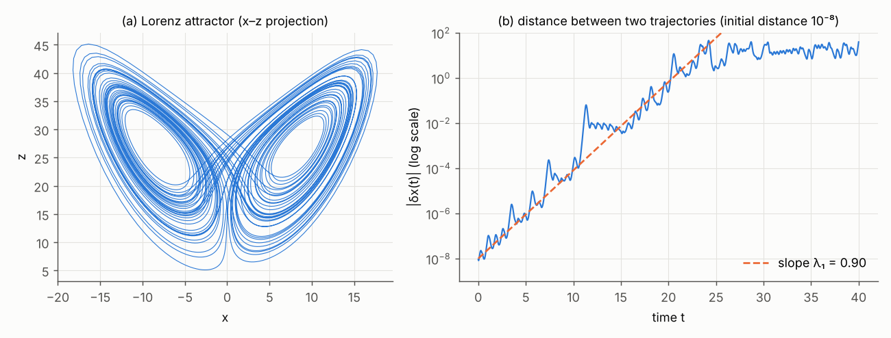

Dynamical systems, bifurcations and invariant measures
Preparation · level L2 → M2 · ≈ 25 h
Objectives
This module provides the language in which the internship frames its questions: a physical model is a dynamical system \dot{\mathbf{x}} = F_{\boldsymbol\lambda}(\mathbf{x}), its regimes change at bifurcations when a parameter \boldsymbol\lambda (here Rm, \Gamma…) crosses a threshold, and what a generative model must learn is not a trajectory, which is unpredictable beyond a few characteristic times, but the invariant measure \mu_{\boldsymbol\lambda} that describes the statistics of the regime. By the end of the planned twenty-five hours, you will be able to:
- state the Cauchy–Lipschitz theorem, prove Grönwall’s lemma and the group property of the flow, and compute how a flow transports volumes (Liouville’s formula);
- find the fixed points of a system, classify them by the eigenvalues of the Jacobian, and prove stability with a Lyapunov function;
- recognize the saddle-node, pitchfork (super- and subcritical) and Hopf bifurcations from their normal forms, explain why the symmetry \mathbf{B} \mapsto -\mathbf{B} makes the pitchfork generic, and prove the amplitude law \sqrt{R - R_c} and the bistability boundary 27h^2 = 4r^3 of the imperfect pitchfork;
- compute numerically the Lyapunov exponents of the Lorenz system, relate their sum to the divergence of the vector field, and describe the merging crisis of two symmetric attractors that gives rise to reversals;
- define invariant measure, ergodicity and physical (SRB) measure, write the Liouville and Fokker–Planck equations, and prove the stationarity identities \mathbb{E}_\mu[F\cdot\nabla\varphi + \tfrac{\sigma^2}{2}\Delta\varphi] = 0, of which the energy budget is a special case;
- explain why these identities do not fix the relative weight of two symmetric attractors (convexity of the set of invariant measures, ergodic measures as extreme points);
- prove the mean first-passage time formula in dimension 1, derive the Arrhenius–Kramers law from it, and estimate a reversal frequency with the Rice formula \mathbb{E}[|\dot X|\,\delta(X)] from the stationary distribution alone;
- reproduce, on the three-mode model of Gissinger (2012), the reversal threshold, the stationarity identities and the Rice formula used in experiment E1 of the repository.
Prerequisites
The starting point is the level of the second year of a French undergraduate degree (L2). You should be able to differentiate a function of several variables, compute a Jacobian matrix, diagonalize a 2\times 2 or 3\times 3 matrix (real or complex eigenvalues), solve a linear differential equation with constant coefficients, and know the basics of probability: expectation, variance, density, Gaussian distribution, exponential distribution. Chapters 5 and 6 use Brownian motion heuristically; no prior knowledge of stochastic calculus is assumed.
On the programming side, it is enough to handle NumPy arrays and write a loop; SciPy is used for solve_ivp (integration of differential equations) and quad (integrals). Three interactive diagrams, which compute directly in your browser, accompany chapters 3, 6 and 7.
The module Vector calculus and Fourier analysis provides the operators \nabla\cdot and \Delta and the integration by parts used in chapter 5. The module Electromagnetism, MHD and the dynamo effect gives the physics of reversals; it can be read in parallel. This module then feeds directly into the modules Probability, statistics and optimal transport (distributions, distances between distributions), Generative models: diffusion and flow matching (the flow of a vector field, the continuity equation) and Generative models under physical constraints (the stationarity identities as a constraint “in distribution”).
Work plan
The level indicates the difficulty: 1 for the foundations, 2 for the core of the module, 3 for what already touches on the research questions of the internship. It never goes down from one session to the next.
| Session | Duration | Level | Content | Exercises |
|---|---|---|---|---|
| 1 | 3 h | 1 | Chapter 1: autonomous equations, Cauchy–Lipschitz, Grönwall, flow, Liouville’s formula, phase portraits | 1, 2 |
| 2 | 3 h | 1 | Chapter 2: fixed points, linear systems, linearization, Lyapunov functions; fixed points of Lorenz and Gissinger | 3, 4 |
| 3 | 4 h | 2 | Chapter 3: saddle-node, pitchfork, Hopf, symmetry \mathbf{B} \mapsto -\mathbf{B}, law \sqrt{R - R_c}, imperfection | 5, 6, 7 |
| 4 | 3.5 h | 2 | Chapter 4: Lorenz, trapping region, Lyapunov exponents, strange attractors, crises | 13 |
| 5 | 3.5 h | 2 | Chapter 5, sections 5.1 to 5.4: invariant measures, Krylov–Bogoliubov, Birkhoff, SRB measure, Liouville and Fokker–Planck equations | 15 |
| 6 | 3.5 h | 3 | Chapter 5, sections 5.5 and 5.6: stationary weak form, energy budget, convexity and ergodic measures | 8, 9, 12 |
| 7 | 2.5 h | 3 | Chapter 6: double well, first-passage time, Arrhenius–Kramers law, Rice formula | 10, 11 |
| 8 | 2 h | 3 | Chapter 7: the Gissinger model, reversal threshold, invariant statistics useful for the internship | 14 |
| Total | 25 h | 7 chapters | 15 exercises |
Each session ends with the listed exercises, to be attempted before reading their solution. The code blocks are short (less than 30 seconds each on a laptop, single thread): copy them, run them, then change the parameters.
1. Autonomous equations, flow and phase portraits
The models of the internship, from Gissinger’s three-mode oscillator to the MHD equations discretized on a grid of several million points, all have the same form: the state at a given instant entirely determines its rate of change. This chapter sets out the vocabulary (vector field, orbit, flow), the theorem that guarantees that a simulation makes sense (Cauchy–Lipschitz), and the formula that tells how a flow deforms volumes, the starting point of the whole theory of invariant measures.
1.1 Vector field, solutions, orbits
Definition 1.1 — Autonomous dynamical system Let F : \mathbb{R}^n \to \mathbb{R}^n be a function of class C^1, called a vector field. The associated autonomous differential system is
\dot{\mathbf{x}}(t) = F(\mathbf{x}(t)), \qquad \mathbf{x}(0) = \mathbf{x}_0 .
A solution is a function \mathbf{x} of class C^1 on an interval containing 0 that satisfies the equation. The space \mathbb{R}^n is the phase space; the set of points \{\mathbf{x}(t)\} visited by a solution is its orbit. “Autonomous” means that F does not depend explicitly on time. The dimension of the state is denoted n in this module (it is denoted D in the other modules; here, D stands for the dipole of the Gissinger model).
Remark 1.2 — Everything reduces to this form A second-order equation such as that of the pendulum, \ddot\theta = -\sin\theta, becomes a first-order system by setting \mathbf{x} = (\theta, \omega) with \dot\theta = \omega and \dot\omega = -\sin\theta. A non-autonomous system \dot{\mathbf{x}} = F(\mathbf{x}, t) becomes autonomous by adding time as a variable: \dot\tau = 1. Finally, a partial differential equation such as the induction equation, once discretized in space (finite differences, finite elements, Fourier), is a system of this type with n equal to the number of unknowns.
Example 1.3 — The three systems that recur in this module (a) The damped oscillator \ddot x + \gamma\dot x + x = 0, i.e. F(x, y) = (y, -x - \gamma y).
(b) The Lorenz system (1963), a three-mode truncation of thermal convection:
\dot x = s\,(y - x), \qquad \dot y = x\,(r - z) - y, \qquad \dot z = xy - b\,z ,
with the classical values s = 10 (Prandtl number, often denoted \sigma; here \sigma is reserved for noise), b = 8/3 and r = 28.
(c) The Gissinger model (2012), a three-mode model of magnetic field reversals, with the quadrupole Q, the dipole D and a velocity mode V:
\dot Q = \mu Q - V D, \qquad \dot D = -\nu D + V Q, \qquad \dot V = \Gamma - V + Q D .
We set \mu = 0.119 and \nu = 0.1 as in Gissinger (2012); \Gamma is the control parameter. This model is the common thread of the module and is the subject of chapter 7.
1.2 Existence, uniqueness and continuous dependence
Theorem 1.4 — Cauchy–Lipschitz If F is locally Lipschitz (which is the case if F is of class C^1), then for every \mathbf{x}_0 there exists a unique maximal solution, defined on an open interval \left]T_-, T_+\right[ containing 0. Moreover, if T_+ < \infty, then |\mathbf{x}(t)| \to \infty as t \to T_+: a solution can stop in finite time only by blowing up.
Proof. Sketch. We rewrite the problem in integral form, \mathbf{x}(t) = \mathbf{x}_0 + \int_0^t F(\mathbf{x}(\tau))\,\mathrm{d}\tau. On an interval [0, \tau_0] short enough that L\tau_0 < 1 (L a Lipschitz constant of F near \mathbf{x}_0), the map \mathbf{x} \mapsto \mathbf{x}_0 + \int_0^t F(\mathbf{x}) is a contraction for the maximum norm, and the Banach fixed-point theorem gives local existence and uniqueness (Picard iterations). The local solutions are then glued together; global uniqueness follows from proposition 1.6 below. If the solution remained bounded near T_+, it could be extended beyond it, which would contradict maximality. ∎
Lemma 1.5 — Grönwall Let u be a continuous nonnegative function on [0, T] such that u(t) \le a + L\int_0^t u(\tau)\,\mathrm{d}\tau for all t, with a \ge 0 and L \ge 0. Then u(t) \le a\,e^{Lt}.
Proof. Let w(t) = a + L\int_0^t u. Then w' = Lu \le Lw, so (w\,e^{-Lt})' = (w' - Lw)\,e^{-Lt} \le 0, and w(t)\,e^{-Lt} \le w(0) = a. We conclude using u \le w. ∎
Proposition 1.6 — Continuous dependence on initial conditions If F is L-Lipschitz on a region that contains two solutions \mathbf{x} and \mathbf{y} up to time T, then for 0 \le t \le T:
|\mathbf{x}(t) - \mathbf{y}(t)| \le |\mathbf{x}_0 - \mathbf{y}_0|\,e^{Lt}.
Proof. By the integral form, \mathbf{x}(t) - \mathbf{y}(t) = \mathbf{x}_0 - \mathbf{y}_0 + \int_0^t \big(F(\mathbf{x}) - F(\mathbf{y})\big), so |\mathbf{x}(t) - \mathbf{y}(t)| \le |\mathbf{x}_0 - \mathbf{y}_0| + L\int_0^t |\mathbf{x} - \mathbf{y}|. Grönwall’s lemma concludes. With \mathbf{x}_0 = \mathbf{y}_0, we obtain uniqueness. ∎
This bound says that two nearby solutions remain close for a finite time. It does not prevent the separation from growing exponentially: this is exactly what happens in a chaotic system (chapter 4), where the factor e^{Lt} is replaced by e^{\lambda_1 t}, with \lambda_1 the Lyapunov exponent.
Example 1.7 — Blow-up and non-uniqueness The equation \dot x = x^2 has the solution x(t) = x_0/(1 - x_0 t), which blows up at time T_+ = 1/x_0 if x_0 > 0: F is C^1 but not globally Lipschitz. The equation \dot x = 2\sqrt{|x|}, with x(0) = 0, on the other hand admits two solutions, x \equiv 0 and x(t) = t^2 for t \ge 0: the square root is not Lipschitz at 0, and uniqueness fails (exercise 2).
For the systems of this module, blow-up is ruled out by an energy argument: we will show in chapter 4 that Lorenz trajectories enter an ellipsoid and never leave it. A solution that stays in a compact set is defined for all t \ge 0, by the second part of theorem 1.4.
1.3 The flow and the transport of volumes
Definition 1.8 — Flow The flow of F is the map \Phi^t that sends an initial condition to the value at time t of the solution starting from it: \Phi^t(\mathbf{x}_0) = \mathbf{x}(t). The flow is denoted \Phi (capital letter) to reserve \varphi for the test functions of chapter 5.
Proposition 1.9 — Group property We have \Phi^0 = \mathrm{Id} and \Phi^{t+s} = \Phi^t \circ \Phi^s wherever these quantities are defined. In particular, \Phi^t is invertible, with inverse \Phi^{-t}.
Proof. Fix s and \mathbf{x}_0. The two functions t \mapsto \Phi^{t+s}(\mathbf{x}_0) and t \mapsto \Phi^t(\Phi^s(\mathbf{x}_0)) are solutions of \dot{\mathbf{x}} = F(\mathbf{x}) (for the first one, because F does not depend on time: a time-shifted solution is still a solution) and both equal \Phi^s(\mathbf{x}_0) at t = 0. By uniqueness, they coincide. ∎
Theorem 1.10 — Variational equation and Liouville’s formula Let M(t) = D\Phi^t(\mathbf{x}_0) denote the Jacobian matrix of the flow with respect to the initial condition. It satisfies the variational equation
\dot M(t) = DF(\mathbf{x}(t))\,M(t), \qquad M(0) = I,
and its determinant is
\det M(t) = \exp\Big(\int_0^t \nabla\cdot F(\mathbf{x}(\tau))\,\mathrm{d}\tau\Big). \tag{1.1}
Consequently, for every region A of phase space, \frac{\mathrm{d}}{\mathrm{d}t}\operatorname{vol}\big(\Phi^t(A)\big) = \int_{\Phi^t(A)} \nabla\cdot F\,\mathrm{d}\mathbf{x}.
Proof. We take for granted that \Phi^t is differentiable with respect to \mathbf{x}_0 (this holds for F of class C^1). Differentiating \partial_t\Phi^t(\mathbf{x}_0) = F(\Phi^t(\mathbf{x}_0)) with respect to \mathbf{x}_0 and exchanging the derivatives, we obtain the variational equation. Jacobi’s formula for the derivative of a determinant then gives \frac{\mathrm{d}}{\mathrm{d}t}\det M = \det M\cdot\operatorname{tr}(M^{-1}\dot M) = \det M\cdot\operatorname{tr}\big(DF(\mathbf{x}(t))\big), and the trace of the Jacobian is the divergence: \operatorname{tr} DF = \nabla\cdot F. Integrating this scalar linear equation yields (1.1). For the volume, the change of variables \mathbf{x} = \Phi^t(\mathbf{x}_0) gives \operatorname{vol}(\Phi^t(A)) = \int_A \det M(t, \mathbf{x}_0)\,\mathrm{d}\mathbf{x}_0; we differentiate under the integral sign and change variables back. ∎
Definition 1.11 — Conservative system, dissipative system A system is conservative if \nabla\cdot F = 0: its flow preserves volumes (Hamiltonian systems, ideal fluid). It is dissipative if \nabla\cdot F < 0: phase-space volumes contract.
Example 1.12 — Two dissipative systems For Lorenz, \nabla\cdot F = \partial_x[s(y - x)] + \partial_y[x(r - z) - y] + \partial_z[xy - bz] = -(s + 1 + b) = -41/3 \approx -13.67, a constant. By (1.1), every volume is multiplied by e^{-13.67} \approx 1.2\times 10^{-6} in one time unit. For Gissinger, \nabla\cdot F = \mu - \nu - 1 = -0.981. In both cases, the set toward which trajectories converge has zero volume: we will meet this property again in chapter 5, where it prevents the stationary distribution from having a density.
The following code checks numerically the group property, formula (1.1) and continuous dependence on the Lorenz system.
import numpy as np
from scipy.integrate import solve_ivp
s, r, b = 10.0, 28.0, 8.0 / 3.0 # Prandtl number s, reduced Rayleigh number r, geometric factor b
def lorenz(t, x):
return [s * (x[1] - x[0]), x[0] * (r - x[2]) - x[1], x[0] * x[1] - b * x[2]]
def jacobienne(x):
return np.array([[-s, s, 0.0],
[r - x[2], -1.0, -x[0]],
[x[1], x[0], -b]])
def flot(x0, t):
"""phi_t(x0), computed with a very tight tolerance."""
sol = solve_ivp(lorenz, (0.0, t), x0, method="DOP853", rtol=1e-12, atol=1e-12)
return sol.y[:, -1]
x0 = np.array([1.0, 1.0, 1.0])
# 1) Group property: phi_{1.5} = phi_1 o phi_{0.5}
ecart = np.abs(flot(x0, 1.5) - flot(flot(x0, 0.5), 1.0)).max()
print(f"|phi_1.5(x0) - phi_1(phi_0.5(x0))| = {ecart:.1e}")
# 2) Variational equation dM/dt = DF(x(t)) M, M(0) = I, then Liouville's formula
def etendu(t, y):
x, M = y[:3], y[3:].reshape(3, 3)
return np.concatenate([lorenz(t, x), (jacobienne(x) @ M).ravel()])
div = -(s + 1.0 + b)
for T in (0.5, 1.0, 2.0):
sol = solve_ivp(etendu, (0.0, T), np.concatenate([x0, np.eye(3).ravel()]),
method="DOP853", rtol=1e-12, atol=1e-14)
M = sol.y[3:, -1].reshape(3, 3)
print(f"T = {T:3.1f} : det M(T) = {np.linalg.det(M):.6e} ; exp(T div F) = {np.exp(T * div):.6e}")
# 3) Continuous dependence (Grönwall): two initial conditions 1e-8 apart
y0 = x0 + np.array([1e-8, 0.0, 0.0])
for T in (1.0, 10.0, 20.0, 30.0):
print(f"T = {T:4.1f} : |phi_T(x0) - phi_T(y0)| = {np.linalg.norm(flot(x0, T) - flot(y0, T)):.2e}")
# output:
# |phi_1.5(x0) - phi_1(phi_0.5(x0))| = 2.2e-13
# T = 0.5 : det M(T) = 1.077261e-03 ; exp(T div F) = 1.077261e-03
# T = 1.0 : det M(T) = 1.160492e-06 ; exp(T div F) = 1.160492e-06
# T = 2.0 : det M(T) = 1.346777e-12 ; exp(T div F) = 1.346741e-12
# T = 1.0 : |phi_T(x0) - phi_T(y0)| = 1.12e-08
# T = 10.0 : |phi_T(x0) - phi_T(y0)| = 1.76e-08
# T = 20.0 : |phi_T(x0) - phi_T(y0)| = 9.25e-06
# T = 30.0 : |phi_T(x0) - phi_T(y0)| = 2.21e-01The discrepancy of 2\times 10^{-13} is the integration error: the group property holds. The determinant follows e^{t\,\nabla\cdot F} to six digits; at time 2, the relative discrepancy of 3\times 10^{-5} comes from the absolute tolerance of the integrator (10^{-14} on entries of M of order 1), which is coarse on the scale of a determinant of 10^{-12} obtained through cancellations. Finally, the initial separation of 10^{-8} remains small until t = 10, then becomes of order 1 around t = 30: the dependence is continuous at fixed time, but the amplification is exponential, as we will quantify in chapter 4.
1.4 Phase portraits in dimensions 1 and 2
Proposition 1.13 — In dimension 1, no oscillation For \dot x = f(x) with f of class C^1 on \mathbb{R}, every solution is monotone. A bounded solution converges to a zero of f.
Proof. If f(x_0) = 0, the solution is constant. Otherwise, f(x(t)) cannot vanish: if f(x(t_1)) = 0, the constant solution equal to x(t_1) and our solution would coincide at t_1, hence everywhere by uniqueness, which contradicts f(x_0) \neq 0. Thus \dot x keeps a constant sign and x is monotone. If it is bounded, it has a limit \ell; if we had f(\ell) \neq 0, we would have \dot x \to f(\ell) \neq 0 and x could not converge. Hence f(\ell) = 0. ∎
The phase portrait of a scalar equation can therefore be read off the sign of f: mark its zeros on the line and draw an arrow to the right where f > 0, to the left where f < 0. A zero toward which the arrows converge is stable; a zero they flee from is unstable. Interactive diagram 1 (chapter 3) applies this method to the normal forms.
Theorem 1.14 — Poincaré–Bendixson (statement) In the plane, if a positive orbit stays in a compact set that contains no fixed point, then its limit set is a periodic orbit: either the orbit is itself periodic, or it winds onto a periodic orbit (a limit cycle).
Proof. Taken for granted; see Strogatz (2018) or Guckenheimer and Holmes (1983). The idea is that a curve in the plane that does not intersect itself (uniqueness) is trapped by the Jordan curve theorem. ∎
An important consequence: a two-dimensional autonomous system cannot be chaotic. At least three variables are needed, which is why the minimal models of Lorenz and Gissinger have exactly three.
Example 1.15 — Damped pendulum For \dot\theta = \omega, \dot\omega = -\sin\theta - \gamma\omega with \gamma = 0.5, the fixed points are (k\pi, 0). The nullclines are the line \omega = 0 (where \dot\theta = 0) and the curve \omega = -\sin(\theta)/\gamma (where \dot\omega = 0). The energy E = \omega^2/2 - \cos\theta decreases along trajectories, since \dot E = \omega\dot\omega + \sin\theta\,\dot\theta = -\gamma\omega^2 \le 0. Trajectories spiral toward the points (2k\pi, 0), the lower positions of the pendulum; the points ((2k+1)\pi, 0), the upper positions, are saddles. Chapter 2 explains how to read these types off the eigenvalues.
Key takeaways — chapter 1
- An autonomous system \dot{\mathbf{x}} = F(\mathbf{x}) with F of class C^1 has a unique maximal solution (Cauchy–Lipschitz), which can only be interrupted by blow-up.
- Grönwall: |\mathbf{x}(t) - \mathbf{y}(t)| \le |\mathbf{x}_0 - \mathbf{y}_0|\,e^{Lt}; the dependence is continuous, but the amplification can be exponential.
- The flow satisfies \Phi^{t+s} = \Phi^t\circ\Phi^s; its Jacobian obeys \dot M = DF\,M and \det M(t) = \exp\int_0^t \nabla\cdot F (Liouville).
- Lorenz (\nabla\cdot F = -41/3) and Gissinger (\nabla\cdot F = \mu - \nu - 1) contract volumes.
- In dimension 1, solutions are monotone; in dimension 2, there is no chaos (Poincaré–Bendixson); n \ge 3 is needed.
2. Fixed points, linearization and stability
A dynamo threshold is the point at which the state without a magnetic field, \mathbf{B} = \mathbf{0}, ceases to be stable: computing it means carrying out a linear stability analysis. Experiment E3 of the repository thus measures the growth rate of the kinematic ABC dynamo as a function of Rm, that is, the largest real part of the eigenvalues of the linearized induction operator (see the report). This chapter provides the tools for this analysis in finite dimension.
2.1 Fixed points and notions of stability
Definition 2.1 — Fixed point, stability A fixed point (or equilibrium point) is a point \mathbf{x}^* such that F(\mathbf{x}^*) = \mathbf{0}: the solution starting from it is constant. It is
- stable (in the sense of Lyapunov) if for every \varepsilon > 0 there exists \delta > 0 such that |\mathbf{x}_0 - \mathbf{x}^*| < \delta implies |\Phi^t(\mathbf{x}_0) - \mathbf{x}^*| < \varepsilon for all t \ge 0;
- asymptotically stable if it is stable and, in addition, \Phi^t(\mathbf{x}_0) \to \mathbf{x}^* for \mathbf{x}_0 close enough;
- unstable if it is not stable.
2.2 Linear systems
For \dot{\mathbf{x}} = A\mathbf{x} with A a constant matrix, the solution is \mathbf{x}(t) = e^{tA}\mathbf{x}_0, where e^{tA} = \sum_k t^k A^k / k!. If A = P\Lambda P^{-1} is diagonalizable, e^{tA} = P\,e^{t\Lambda}P^{-1}: each eigenmode evolves as e^{\lambda_k t}, and the real part of \lambda_k determines its growth or decay.
Theorem 2.2 — Stability of a linear system The origin is asymptotically stable for \dot{\mathbf{x}} = A\mathbf{x} if and only if all the eigenvalues of A have a strictly negative real part. If one of them has a strictly positive real part, the origin is unstable.
Proof. Diagonalizable case. Let \alpha = \max_k \operatorname{Re}\lambda_k. Then |e^{tA}\mathbf{x}_0| \le \|P\|\,\|P^{-1}\|\,e^{\alpha t}|\mathbf{x}_0|, which tends to 0 if \alpha < 0, and which is small uniformly in t if |\mathbf{x}_0| is small: asymptotic stability. If \operatorname{Re}\lambda_k > 0, the solution starting from \varepsilon\,\mathbf{v}_k (an eigenvector, or the real part of a complex eigenvector) grows as e^{t\operatorname{Re}\lambda_k} for every \varepsilon > 0: instability. In the general case, the Jordan form brings in terms t^m e^{\lambda t}, and the same conclusion holds with \alpha replaced by any \alpha' > \alpha. If all the real parts are \le 0 and one of them is zero, the corresponding mode does not decay: there is no asymptotic stability. ∎
In dimension 2, the eigenvalues depend only on the trace \tau = \operatorname{tr}A and the determinant \Delta = \det A: \lambda = \big(\tau \pm \sqrt{\tau^2 - 4\Delta}\big)/2. This yields the following classification.
| Condition | Eigenvalues | Type of the origin |
|---|---|---|
| \Delta < 0 | real, of opposite signs | saddle (always unstable) |
| \Delta > 0, \tau^2 > 4\Delta | real, of the same sign | node, stable if \tau < 0 |
| \Delta > 0, \tau^2 < 4\Delta | complex conjugate | focus (spiral), stable if \tau < 0 |
| \Delta > 0, \tau = 0 | purely imaginary | center (closed orbits) |
Example 2.3 — Damped oscillator For \ddot x + \gamma\dot x + x = 0, we have A = \begin{pmatrix} 0 & 1 \\ -1 & -\gamma\end{pmatrix}, hence \tau = -\gamma and \Delta = 1. For 0 < \gamma < 2, \tau^2 < 4\Delta: the origin is a stable focus, and the oscillation decays as e^{-\gamma t/2}. For \gamma > 2, it is a stable node (overdamped regime). For \gamma = 0, it is a center.
2.3 Linearization around a fixed point
Near a fixed point, we write \mathbf{x} = \mathbf{x}^* + \mathbf{y} and F(\mathbf{x}^* + \mathbf{y}) = A\mathbf{y} + R(\mathbf{y}), with A = DF(\mathbf{x}^*) and a remainder |R(\mathbf{y})| \le C|\mathbf{y}|^2 if F is of class C^2.
Theorem 2.4 — Linearized stability If all the eigenvalues of A = DF(\mathbf{x}^*) have a strictly negative real part, \mathbf{x}^* is asymptotically stable, and the convergence is exponential. If one of them has a strictly positive real part, \mathbf{x}^* is unstable.
Proof. First claim. Since the eigenvalues of A have negative real parts, the integral P = \int_0^\infty e^{tA^{\mathsf T}}e^{tA}\,\mathrm{d}t converges (theorem 2.2). The matrix P is symmetric positive definite, and by integrating \frac{\mathrm{d}}{\mathrm{d}t}\big(e^{tA^{\mathsf T}}e^{tA}\big) = A^{\mathsf T}e^{tA^{\mathsf T}}e^{tA} + e^{tA^{\mathsf T}}e^{tA}A from 0 to \infty, we find the Lyapunov equation A^{\mathsf T}P + PA = -I. Let V(\mathbf{y}) = \mathbf{y}^{\mathsf T}P\mathbf{y}. Along a solution,
\dot V = \mathbf{y}^{\mathsf T}(A^{\mathsf T}P + PA)\,\mathbf{y} + 2\,\mathbf{y}^{\mathsf T}P\,R(\mathbf{y}) \le -|\mathbf{y}|^2 + 2\|P\|\,C\,|\mathbf{y}|^3 .
For |\mathbf{y}| \le \rho_0 = 1/(4\|P\|C), we therefore have \dot V \le -|\mathbf{y}|^2/2 \le -V/(2\lambda_{\max}(P)). Choose c = \lambda_{\min}(P)\,\rho_0^2: the set \{V \le c\} is contained in the ball of radius \rho_0, and since V decreases there, a solution starting in this set cannot leave it. Along such a solution, V decreases exponentially; since V \ge \lambda_{\min}(P)|\mathbf{y}|^2, so does \mathbf{y}. The second claim (instability) is proved with a similar construction; we take it for granted. ∎
Remark 2.5 — Hyperbolic points, Hartman–Grobman theorem A fixed point is hyperbolic if no eigenvalue of DF(\mathbf{x}^*) has zero real part. The Hartman–Grobman theorem (taken for granted) states that in a neighborhood of a hyperbolic point, the phase portrait is a continuous deformation of that of the linearized system. When an eigenvalue has zero real part, linearization is inconclusive: this is precisely the situation of bifurcations (chapter 3).
Example 2.6 — The fixed points of Lorenz The origin is always a fixed point. At O, the Jacobian has eigenvalues -b and the roots of \lambda^2 + (s + 1)\lambda + s(1 - r) = 0. For r < 1, all are negative: O is stable. For r > 1, the product of the roots s(1 - r) is negative, so one of them is positive: O becomes a saddle. At the same time, two symmetric fixed points C_\pm = \big(\pm\sqrt{b(r-1)}, \pm\sqrt{b(r-1)}, r - 1\big) appear, stable as long as r < r_H = s(s + b + 3)/(s - b - 1) \approx 24.74 (formula taken for granted; we check it numerically below). At r = 28, all three fixed points are unstable, and yet trajectories remain bounded (proposition 4.1): apart from the exceptional ones that land exactly on the stable manifold of a fixed point, they converge to no equilibrium and oscillate indefinitely, periodically or chaotically.
Example 2.7 — The fixed points of the Gissinger model The point O = (0, 0, \Gamma) is fixed. The Jacobian at a point (Q, D, V) is
DF = \begin{pmatrix} \mu & -V & -D \\ V & -\nu & Q \\ D & Q & -1 \end{pmatrix},
which at O consists of a block \begin{pmatrix} \mu & -\Gamma \\ \Gamma & -\nu \end{pmatrix} followed by the eigenvalue -1. The block has trace \mu - \nu and determinant \Gamma^2 - \mu\nu, hence \lambda_{1,2} = \frac{\mu - \nu}{2} \pm \frac12\sqrt{(\mu + \nu)^2 - 4\Gamma^2} (Gissinger, 2012). With \mu = 0.119, \nu = 0.1 and \Gamma = 0.9, we get 0.0095 \pm 0.893\,i: O is a barely unstable focus, and the amplitude of an oscillation around O only doubles in \ln 2/0.0095 \approx 73 time units.
For the other fixed points, we combine \mu Q = VD and \nu D = VQ: if QD \ne 0, we get \mu\nu\,QD = V^2\,QD, hence V = \pm\sqrt{\mu\nu}. With V = -\sqrt{\mu\nu}, the equation \dot V = 0 gives Q^2 = \nu + \Gamma\sqrt{\nu/\mu} and D = -Q\sqrt{\mu/\nu}: these are the points N_\pm, which always exist. With V = +\sqrt{\mu\nu}, we get Q^2 = \nu - \Gamma\sqrt{\nu/\mu}, positive only if \sqrt{\mu\nu} > \Gamma: these points M_\pm do not exist here, since \sqrt{\mu\nu} \approx 0.109 < 0.9.
The following code computes these eigenvalues and locates numerically the Hopf bifurcation of Lorenz.
import numpy as np
# --- Lorenz: origin and C+ = (a, a, r - 1), a = sqrt(b (r - 1)) ---
s, b = 10.0, 8.0 / 3.0
def jac_lorenz(x, r):
return np.array([[-s, s, 0.0], [r - x[2], -1.0, -x[0]], [x[1], x[0], -b]])
for r in (0.5, 10.0, 28.0):
vp0 = np.linalg.eigvals(jac_lorenz(np.zeros(3), r))
texte = f"r = {r:4.1f} : max Re(eig) at O = {vp0.real.max():+.3f}"
if r > 1:
a = np.sqrt(b * (r - 1))
vpC = np.linalg.eigvals(jac_lorenz(np.array([a, a, r - 1]), r))
texte += f" ; at C+ = {vpC.real.max():+.3f}"
print(texte)
# Hopf threshold of C+: sweep in r, compared with the closed-form formula
rs = np.arange(20.0, 30.0, 0.01)
mx = np.array([np.linalg.eigvals(jac_lorenz(np.array([np.sqrt(b*(r-1))]*2 + [r-1]), r)).real.max()
for r in rs])
r_num = rs[np.argmax(mx > 0)]
print(f"numerical Hopf r_H ≈ {r_num:.2f} ; formula s(s+b+3)/(s-b-1) = "
f"{s * (s + b + 3) / (s - b - 1):.4f}")
# --- Gissinger (2012): mu = 0.119, nu = 0.1, Gamma = 0.9 ---
mu, nu, G = 0.119, 0.1, 0.9
def jac_giss(x):
q, d, v = x
return np.array([[mu, -v, -d], [v, -nu, q], [d, q, -1.0]])
O = np.array([0.0, 0.0, G])
print("O : eigenvalues", np.round(np.linalg.eigvals(jac_giss(O)), 4))
print(" formula: (mu-nu)/2 ± i sqrt(4G^2-(mu+nu)^2)/2 =",
f"{(mu-nu)/2:.4f} ± {np.sqrt(4*G**2-(mu+nu)**2)/2:.4f} i")
print("M± exist?", np.sqrt(mu * nu) > G, f"(sqrt(mu nu) = {np.sqrt(mu*nu):.4f})")
q = np.sqrt(nu + G * np.sqrt(nu / mu)); d = -np.sqrt(mu + G * np.sqrt(mu / nu)); v = -np.sqrt(mu * nu)
Np = np.array([q, d, v])
F = np.array([mu*q - v*d, -nu*d + v*q, G - v + q*d])
print("N+ =", np.round(Np, 4), "; |F(N+)| =", f"{np.abs(F).max():.1e}")
print("N+ : eigenvalues", np.round(np.linalg.eigvals(jac_giss(Np)), 4))
print("divergence mu - nu - 1 =", round(mu - nu - 1, 3))
# output:
# r = 0.5 : max Re(eig) at O = -0.475
# r = 10.0 : max Re(eig) at O = +5.466 ; at C+ = -0.595
# r = 28.0 : max Re(eig) at O = +11.828 ; at C+ = +0.094
# numerical Hopf r_H ≈ 24.74 ; formula s(s+b+3)/(s-b-1) = 24.7368
# O : eigenvalues [ 0.0095+0.8933j 0.0095-0.8933j -1. +0.j ]
# formula: (mu-nu)/2 ± i sqrt(4G^2-(mu+nu)^2)/2 = 0.0095 ± 0.8933 i
# M± exist? False (sqrt(mu nu) = 0.1091)
# N+ = [ 0.9618 -1.0492 -0.1091] ; |F(N+)| = 1.4e-17
# N+ : eigenvalues [-1.1691+0.j 0.094 +0.6065j 0.094 -0.6065j]
# divergence mu - nu - 1 = -0.981The threshold r_H found by the sweep agrees with the formula. For the Gissinger model, the formula for the eigenvalues at O is confirmed, and N_+ has a pair of complex eigenvalues with real part +0.094: it is an unstable saddle-focus, which attracts in one direction (-1.17) and repels in a spiral in the other two. Trajectories remain bounded (Gissinger, 2012, attributes this to the relative signs of the quadratic terms; we observe it numerically). Since all the fixed points are unstable, a typical trajectory converges to no equilibrium and oscillates indefinitely; we will see that it is chaotic.
2.4 Lyapunov functions
Linearization says nothing far from the fixed point, nor in non-hyperbolic cases. Lyapunov’s direct method generalizes the idea of a decreasing energy.
Definition 2.8 — Lyapunov function Let U be a neighborhood of \mathbf{x}^*. A function V : U \to \mathbb{R} of class C^1 is a Lyapunov function if V(\mathbf{x}^*) = 0, V(\mathbf{x}) > 0 for \mathbf{x} \ne \mathbf{x}^*, and \dot V(\mathbf{x}) = \nabla V(\mathbf{x})\cdot F(\mathbf{x}) \le 0 on U. It is strict if \dot V < 0 on U \setminus\{\mathbf{x}^*\}.
Theorem 2.9 — Lyapunov’s direct method If there exists a Lyapunov function, \mathbf{x}^* is stable; if it is strict, \mathbf{x}^* is asymptotically stable. If moreover U = \mathbb{R}^n and V(\mathbf{x}) \to \infty as |\mathbf{x}| \to \infty, every solution converges to \mathbf{x}^* (global stability).
Proof. Stability. Let \varepsilon > 0 be small enough that the closed ball \bar B(\mathbf{x}^*, \varepsilon) lies in U, and m = \min\{V(\mathbf{x}) : |\mathbf{x} - \mathbf{x}^*| = \varepsilon\} > 0. By continuity, there exists \delta < \varepsilon such that V < m on B(\mathbf{x}^*, \delta). A solution starting in this ball has V(\mathbf{x}(t)) \le V(\mathbf{x}_0) < m for all t, since V decreases; it can therefore never reach the sphere of radius \varepsilon.
Asymptotic stability. V(\mathbf{x}(t)) decreases and converges to a limit c \ge 0. If c > 0, the trajectory stays in the compact set K = \{c \le V \le V(\mathbf{x}_0)\} \cap \bar B(\mathbf{x}^*, \varepsilon), which does not contain \mathbf{x}^*; \dot V is bounded above there by some -\kappa < 0, whence V(\mathbf{x}(t)) \le V(\mathbf{x}_0) - \kappa t, which becomes negative: a contradiction. Hence c = 0, and \mathbf{x}(t) \to \mathbf{x}^*. The global case is handled in the same way, the sets \{V \le c\} then being compact. ∎
Example 2.10 — Gradient systems, the Lorenz system for r < 1 For a gradient system \dot{\mathbf{x}} = -\nabla U(\mathbf{x}), we have \dot U = -|\nabla U|^2 \le 0: the potential U (up to a constant) is a Lyapunov function at each of its isolated strict minima. The double well of chapter 6 is of this type. For the Lorenz system with r < 1, the function V = x^2/s + y^2 + z^2 satisfies \dot V = -2\big[(x - \tfrac{r+1}{2}y)^2 + (1 - \tfrac{(r+1)^2}{4})y^2\big] - 2bz^2 < 0 away from the origin, which proves the global stability of O (exercise 4).
Key takeaways — chapter 2
- A fixed point is asymptotically stable if all the eigenvalues of the Jacobian have a negative real part, unstable if one is positive; the case of a zero real part is that of bifurcations.
- In dimension 2: saddle if \det A < 0; otherwise node or focus depending on the sign of \tau^2 - 4\Delta, stable if \tau < 0.
- A Lyapunov function (V > 0, \dot V \le 0) proves stability without solving the equation, sometimes globally.
- Lorenz: O stable for r < 1, C_\pm stable for 1 < r < r_H \approx 24.74, all unstable at r = 28.
- Gissinger (\mu = 0.119, \nu = 0.1, \Gamma = 0.9): O is a very weakly unstable focus (0.0095 \pm 0.893\,i), N_\pm are unstable saddle-foci, M_\pm do not exist.
3. Local bifurcations and normal forms
When the magnetic Reynolds number of a dynamo experiment is increased, the state \mathbf{B} = \mathbf{0} loses its stability at a threshold Rm_c and a field appears. Near the threshold, the amplitude of this field obeys a law that depends only on the type of bifurcation, not on the details of the flow. Normal forms are the simplest equations representing each type; every sufficiently regular system reduces to one of them near the threshold.
3.1 What is a bifurcation?
Definition 3.1 — Local bifurcation Consider a family \dot{\mathbf{x}} = F(\mathbf{x}, r) depending on a real parameter r. We say that r_c is a bifurcation value if the phase portrait changes qualitatively when r crosses r_c: number of fixed points or periodic orbits, or their stability. The bifurcation is local if it occurs in a neighborhood of a non-hyperbolic fixed point: DF(\mathbf{x}^*, r_c) has a zero eigenvalue (stationary bifurcation) or a pair \pm i\omega (Hopf bifurcation).
Remark 3.2 — Center manifold reduction In a neighborhood of a non-hyperbolic fixed point, there exists an invariant manifold, the center manifold, tangent to the eigendirections of the eigenvalues with zero real part; the other directions relax exponentially toward it (theorem taken for granted, see Guckenheimer and Holmes, 1983, or Kuznetsov, 2023). The dynamics near the threshold therefore reduces to an equation of dimension 1 (zero eigenvalue) or 2 (imaginary pair), whatever the dimension n of the original system, including for the discretized MHD equations. The normal forms below are these reduced equations, after a change of variables.
3.2 The saddle-node
Proposition 3.3 — Normal form of the saddle-node For \dot x = r + x^2:
- if r < 0, there are two fixed points x_\pm = \pm\sqrt{-r}; x_- = -\sqrt{-r} is stable and x_+ = +\sqrt{-r} is unstable;
- if r = 0, they merge at x = 0, which is semi-stable;
- if r > 0, there is no fixed point anymore.
Proof. The fixed points are the roots of r + x^2 = 0. Their stability is read off f'(x) = 2x: negative at x_-, positive at x_+ (theorem 2.4 in dimension 1). ∎
Two fixed points, one stable and the other unstable, approach each other and then annihilate: this is the generic bifurcation in the absence of symmetry. Just past the threshold, a “ghost” remains: where the fixed point has disappeared, the velocity \dot x = r + x^2 remains very small, and the trajectory spends a long time there.
Proposition 3.4 — Bottleneck For r > 0, the time taken to go from x = -a to x = +a is
T(r) = \frac{2}{\sqrt r}\arctan\frac{a}{\sqrt r} = \frac{\pi}{\sqrt r} - \frac{2}{a} + O\big(r/a^3\big).
The passage time diverges as r^{-1/2} at the threshold.
Proof. Since \dot x > 0, we change variables: T = \int_{-a}^{a}\frac{\mathrm{d}x}{r + x^2} = \frac{1}{\sqrt r}\Big[\arctan\frac{x}{\sqrt r}\Big]_{-a}^{a}. The expansion \arctan z = \pi/2 - 1/z + O(z^{-3}) for z = a/\sqrt r \to \infty gives the right-hand side. ∎
Example 3.5 — Periodic reversals of Pétrélis and Fauve Pétrélis and Fauve (2008) describe the field of a turbulent dynamo by a complex amplitude A = D + iQ (dipole and quadrupole), whose phase obeys, after reduction,
\dot\theta = \mu_i - \rho\sin 2\theta .
For |\mu_i| < \rho, there are four fixed points, two of which are stable, \theta_c and \theta_c + \pi: these are two dipoles of opposite polarities. At \mu_i = \rho, the fixed points disappear in pairs through a saddle-node; beyond it, \theta rotates and the dipole D \propto \cos(\theta + \theta_0) reverses periodically, with a time \pi/\sqrt{\mu_i^2 - \rho^2} between two reversals (exercise 5). Near the threshold, this time diverges as (\mu_i - \rho)^{-1/2}, in agreement with proposition 3.4. Just below the threshold, it is the turbulent fluctuations that trigger random reversals (Pétrélis et al., 2009): this is the subject of chapter 6.
3.3 The pitchfork
Proposition 3.6 — Supercritical pitchfork For \dot x = rx - x^3:
- if r < 0, only x = 0 is fixed, and it is stable;
- if r > 0, x = 0 is unstable and two stable fixed points x_\pm = \pm\sqrt r appear.
The amplitude of the bifurcated state grows as \sqrt r, and the relaxation rate toward it is 2r.
Proof. The fixed points are x = 0 and x^2 = r. We have f'(x) = r - 3x^2, which equals r at 0 and r - 3r = -2r at \pm\sqrt r. ∎
The relaxation rate |r| or 2r tends to zero at the threshold: this is critical slowing down. An experiment or a simulation near a threshold therefore takes a very long time to reach its steady regime.
Proposition 3.7 — Subcritical pitchfork and hysteresis For \dot x = rx + x^3 - x^5, the nonzero fixed points satisfy x^2 = \big(1 \pm \sqrt{1 + 4r}\big)/2. The “+” branch exists for r \ge -1/4 and is stable (for r > -1/4); the “-” branch exists for -1/4 \le r < 0 and is unstable; x = 0 is stable for r < 0. On the interval \left]-1/4, 0\right[, the zero state and the finite-amplitude state (x^2 > 1/2, i.e. |x| between 0.71 and 1) are both stable (bistability).
Proof. At a nonzero fixed point, r + x^2 - x^4 = 0, a quadratic equation in x^2 that gives the two branches. On these branches, r = x^4 - x^2, so f'(x) = r + 3x^2 - 5x^4 = 2x^2 - 4x^4 = 2x^2(1 - 2x^2), which is negative if and only if x^2 > 1/2, that is, on the “+” branch. ∎
If r is slowly increased from a negative value, the system stays at x = 0 until r = 0, then jumps to the finite-amplitude branch |x| = 1. On the way back down, it stays there until r = -1/4, where the stable branch disappears through a saddle-node, and it falls back to zero. The upward and downward paths differ: this is a hysteresis loop. A subcritical dynamo would thus appear abruptly, with a finite-amplitude field, and would persist below its onset threshold.
3.4 The Hopf bifurcation
Proposition 3.8 — Hopf normal form For the complex variable z and
\dot z = (\mu + i\omega)\,z - (1 + i\beta)\,|z|^2 z
(here \mu is the bifurcation parameter, unrelated to the coefficient \mu of the Gissinger model), the polar form z = \varrho\,e^{i\theta} gives \dot\varrho = \mu\varrho - \varrho^3 and \dot\theta = \omega - \beta\varrho^2. For \mu > 0, there exists a stable limit cycle of radius \sqrt\mu and period 2\pi/(\omega - \beta\mu).
Proof. We compute \dot z = (\dot\varrho + i\varrho\dot\theta)\,e^{i\theta} and identify with \big[(\mu + i\omega)\varrho - (1 + i\beta)\varrho^3\big]e^{i\theta}: real part \dot\varrho = \mu\varrho - \varrho^3, imaginary part \varrho\dot\theta = \omega\varrho - \beta\varrho^3. The radial equation is a supercritical pitchfork (proposition 3.6): \varrho = \sqrt\mu is stable, and on this circle \dot\theta = \omega - \beta\mu is constant. ∎
Theorem 3.9 — Hopf (statement) If the Jacobian DF(\mathbf{x}^*, r) has a pair of simple eigenvalues \alpha(r) \pm i\omega(r) with \alpha(r_c) = 0, \alpha'(r_c) \ne 0 and \omega(r_c) \ne 0, all the other eigenvalues having a negative real part, then a periodic orbit with amplitude proportional to \sqrt{|r - r_c|} is born at r_c. If a computable coefficient, the first Lyapunov coefficient, is nonzero, this orbit exists past the threshold and is stable (supercritical Hopf), or exists before the threshold and is unstable (subcritical Hopf), depending on its sign.
Proof. Taken for granted; see Kuznetsov (2023). The proof reduces the system to the center manifold (of dimension 2) and then brings the reduced equation to the normal form 3.8 through polynomial changes of variables. ∎
In the Lorenz system, the points C_\pm lose their stability at r_H \approx 24.74 through a subcritical Hopf bifurcation: no stable orbit takes over, which leaves room for chaos (Strogatz, 2018). In the Gissinger model, the point O becomes an unstable focus through a Hopf bifurcation when \mu exceeds \nu, if \mu + \nu < 2\Gamma (Gissinger, 2012).
3.5 Bifurcation with symmetry: the states \pm\mathbf{B}
Definition 3.10 — Equivariant system Let S be an orthogonal matrix such that S^2 = I. The vector field F is equivariant under S (or “S is a symmetry of the system”) if F(S\mathbf{x}) = S\,F(\mathbf{x}) for all \mathbf{x}. In this case, \Phi^t(S\mathbf{x}) = S\,\Phi^t(\mathbf{x}): the image under S of a solution is a solution (same uniqueness argument as in proposition 1.9).
Proposition 3.11 — Symmetry makes the pitchfork generic Let \dot x = f(x, r) in dimension 1 with f(-x, r) = -f(x, r) (symmetry x \mapsto -x), f smooth, \partial_x f(0, r_c) = 0, \partial_r\partial_x f(0, r_c) \ne 0 and \partial_x^3 f(0, r_c) \ne 0. Then, near (0, r_c), the dynamics is that of a pitchfork (super- or subcritical depending on the sign of \partial_x^3 f), and not that of a saddle-node.
Proof. An odd function has only odd powers in its expansion: f(x, r) = a(r)\,x + c(r)\,x^3 + O(x^5), with a(r_c) = 0. The even terms, which would produce a saddle-node, are forbidden by the symmetry. We set \tilde r = a(r) \approx a'(r_c)(r - r_c), which changes sign at r_c, and, since c(r_c) \ne 0, y = \sqrt{|c(r)|}\,x: the equation becomes \dot y = \tilde r\,y \pm y^3 up to higher-order terms, with the sign of c(r_c), that is, that of \partial_x^3 f(0, r_c) (“-”: supercritical, “+”: subcritical). ∎
This is the situation of the dynamo. The induction equation \partial_t\mathbf{B} = \nabla\times(\mathbf{u}\times\mathbf{B}) + \eta\Delta\mathbf{B} is linear in \mathbf{B}, and the Laplace force (\nabla\times\mathbf{B})\times\mathbf{B} is quadratic; the MHD equations are therefore invariant under (\mathbf{u}, \mathbf{B}) \mapsto (\mathbf{u}, -\mathbf{B}). Every dynamo state \mathbf{B} has a twin -\mathbf{B}, with exactly the same flow, and the bifurcation from \mathbf{B} = \mathbf{0} (for a real eigenvalue) is a pitchfork: two symmetric branches \pm\mathbf{B} appear together. It is this symmetry that gives meaning to the word “reversal”.
Proposition 3.12 — Amplitude law near the threshold Suppose that, near the threshold, the amplitude A of the unstable mode obeys the reduced equation \dot A = \kappa\,(R - R_c)\,A - g\,A^3 with \kappa > 0 and g > 0 (supercritical pitchfork). Then, for R > R_c, the saturated state satisfies
|A| = \sqrt{\frac{\kappa\,(R - R_c)}{g}}, \qquad A^2 \propto R - R_c .
Proof. This is proposition 3.6 after the change of variables r = \kappa(R - R_c) and x = \sqrt{g}\,A. ∎
For a dynamo, the magnetic energy, proportional to A^2, therefore grows linearly with the distance to threshold Rm - Rm_c. This law holds only near the threshold and for a supercritical bifurcation; far from the threshold, or for a turbulent flow, other scaling laws appear (see the module MHD and the dynamo effect).
3.6 Imperfection: when the symmetry is slightly broken
Proposition 3.13 — Imperfect pitchfork and cusp For \dot x = h + rx - x^3 with h \ne 0, the equation has three fixed points (two stable, one unstable) if 27h^2 < 4r^3, and only one (stable) if 27h^2 > 4r^3. The boundary 27h^2 = 4r^3 in the (r, h) plane is a cusp; on it, two fixed points are born or disappear through a saddle-node.
Proof. The number of real roots of the polynomial h + rx - x^3 changes when a root becomes double: f(x) = 0 and f'(x) = r - 3x^2 = 0. The second condition gives r = 3x^2, then the first h = x^3 - rx = -2x^3. Eliminating x: 4r^3 = 4\cdot 27\,x^6 = 27\,(2x^3)^2 = 27h^2. For r \le 0, f is strictly decreasing and has only one root; for r > 0 and h = 0, we recover the three roots of the pitchfork, and this number is preserved as long as the boundary is not crossed. Stabilities are read off the sign of f'. ∎
Physically, a small term h that breaks the symmetry x \mapsto -x (for example an external magnetic field, such as the Earth’s field, in a dynamo experiment) selects a polarity: the branch favored by the sign of h appears continuously, while the other appears only after the saddle-node r = 3\,(|h|/2)^{2/3}. With h = 0.05, this saddle-node is at r \approx 0.26 (figure below, panel d). In the Gissinger model, the symmetry \mathbf{B} \mapsto -\mathbf{B} remains exact for every \Gamma; the forcing \Gamma sustains a velocity mode that breaks another symmetry, that of the flow with respect to the equatorial plane, and it is this breaking that couples dipole and quadrupole (Gissinger, Dormy and Fauve, 2010; Gissinger, 2012).
![Four bifurcation diagrams in a two-by-two grid. Top left, a sideways parabola whose lower half is a solid blue line and upper half orange dashes, meeting at r equal 0. Top right, a pitchfork: a blue horizontal axis for negative r, dashed orange for positive r, and two blue square-root branches. Bottom left, the subcritical pitchfork with S-shaped branches, and two vertical arrows indicating the jumps at r equal 0 and r equal minus 0.25. Bottom right, a continuous increasing blue curve and, from r equal 0.26, a blue branch and an orange branch born together below the axis.](../../../prep/p4-systemes-dynamiques/figures/bifurcations-en.png)
The following code checks three predictions of the chapter: the exponent 1/2 of the pitchfork, the passage time \pi/\sqrt r of the saddle-node, and the hysteresis of the subcritical pitchfork.
import numpy as np
from scipy.integrate import solve_ivp, quad
def etat_final(f, x0, T=400.0):
"""Integrates dx/dt = f(x) up to T and returns x(T)."""
sol = solve_ivp(lambda t, x: f(x), (0.0, T), [x0], rtol=1e-10, atol=1e-12)
return sol.y[0, -1]
# 1) Supercritical pitchfork dx/dt = r x - x^3: amplitude ~ r^(1/2)
rs = np.array([1e-3, 3e-3, 1e-2, 3e-2, 1e-1])
amp = np.array([etat_final(lambda x, r=r: r * x - x**3, 0.01, T=40.0 / r) for r in rs])
pente = np.polyfit(np.log(rs), np.log(amp), 1)[0]
print("pitchfork: amplitudes", np.round(amp, 4), f"; fitted exponent = {pente:.3f}")
# 2) Saddle-node dx/dt = r + x^2 just past the threshold: passage time from x = -10 to x = +10
for r in (1e-2, 1e-3, 1e-4):
T = quad(lambda x: 1.0 / (r + x**2), -10, 10, points=[0.0], limit=200)[0]
print(f"saddle-node: r = {r:.0e}, passage time = {T:9.2f} ; pi/sqrt(r) = {np.pi / np.sqrt(r):9.2f}")
# 3) Subcritical pitchfork dx/dt = r x + x^3 - x^5: hysteresis
# slow sweep of r upward then downward, each time starting from the previous state
# (1e-6 is added at each step: a small perturbation, like the noise of an experiment)
def suivre(rs, x):
out = []
for r in rs:
x = etat_final(lambda y, r=r: r * y + y**3 - y**5, x + 1e-6, T=400.0)
out.append(x)
return np.array(out)
r_haut = np.arange(-0.375, 0.15, 0.05)
monte = suivre(r_haut, 1e-3)
descend = suivre(r_haut[::-1], monte[-1])[::-1]
for r, a, b in zip(r_haut, monte, descend):
print(f"r = {r:+.3f} : upward branch x = {a:6.3f} ; downward branch x = {b:6.3f}")
# output:
# pitchfork: amplitudes [0.0316 0.0548 0.1 0.1732 0.3162] ; fitted exponent = 0.500
# saddle-node: r = 1e-02, passage time = 31.22 ; pi/sqrt(r) = 31.42
# saddle-node: r = 1e-03, passage time = 99.15 ; pi/sqrt(r) = 99.35
# saddle-node: r = 1e-04, passage time = 313.96 ; pi/sqrt(r) = 314.16
# r = -0.375 : upward branch x = 0.000 ; downward branch x = 0.000
# r = -0.325 : upward branch x = 0.000 ; downward branch x = 0.000
# r = -0.275 : upward branch x = 0.000 ; downward branch x = 0.000
# r = -0.225 : upward branch x = 0.000 ; downward branch x = 0.811
# r = -0.175 : upward branch x = 0.000 ; downward branch x = 0.880
# r = -0.125 : upward branch x = 0.000 ; downward branch x = 0.924
# r = -0.075 : upward branch x = 0.000 ; downward branch x = 0.958
# r = -0.025 : upward branch x = 0.000 ; downward branch x = 0.987
# r = +0.025 : upward branch x = 0.022 ; downward branch x = 1.012
# r = +0.075 : upward branch x = 1.034 ; downward branch x = 1.034
# r = +0.125 : upward branch x = 1.055 ; downward branch x = 1.055The fit on a log-log scale recovers the exponent 0.500. The passage times differ from \pi/\sqrt r by exactly 2/a = 0.2, as stated in proposition 3.4. The upward sweep stays at x = 0 until r = +0.025 (critical slowing down delays the departure: at r = 0.025, the perturbation has grown only by a factor e^{10} in 400 time units), then jumps to the branch |x| \approx 1; the downward sweep stays there until r = -0.225 and falls back to zero before r = -0.275, on either side of the saddle-node r = -1/4. The downward branch follows the formula: for r = -0.225, x^2 = (1 + \sqrt{0.1})/2, i.e. x = 0.811.
The following interactive diagram lets you move r (and h) and see, on the left, the vector field on the line with its fixed points and, on the right, the current position on the bifurcation diagram.
Key takeaways — chapter 3
- A local bifurcation occurs when an eigenvalue (or a pair) crosses the imaginary axis; the dynamics then reduces to an equation of dimension 1 or 2 (center manifold).
- Saddle-node \dot x = r + x^2: two fixed points annihilate; passage time \pi/\sqrt r past the threshold.
- Pitchfork \dot x = rx - x^3: amplitude \sqrt r, critical slowing down; the subcritical version gives a finite-amplitude jump and hysteresis between r = -1/4 and r = 0.
- Supercritical Hopf: a stable limit cycle of amplitude \sqrt{\mu} is born from a focus; in the subcritical case, the oscillation appears abruptly with a finite amplitude.
- The symmetry \mathbf{B} \mapsto -\mathbf{B} of MHD forbids even terms: the pitchfork is generic, the states \pm\mathbf{B} appear together, and |\mathbf{B}|^2 \propto Rm - Rm_c near a supercritical threshold.
- A small symmetry breaking h unfolds the pitchfork (cusp 27h^2 = 4r^3) and selects a polarity.
4. Chaos: Lorenz, Lyapunov exponents, crises
Beyond the successive thresholds, the dynamics can become chaotic: bounded, non-periodic, and sensitive to initial conditions. This is the case of the Gissinger model in the reversal regime. This chapter defines and measures this sensitivity, then describes the crisis that merges two symmetric attractors: this is the deterministic mechanism of the reversals of chapter 7.
4.1 The Lorenz system
The Lorenz system (example 1.3) is invariant under S : (x, y, z) \mapsto (-x, -y, z), the same symmetry structure as (Q, D, V) \mapsto (-Q, -D, V) for Gissinger. Its scenario illustrates the previous chapters: at r = 1, the origin becomes unstable through a pitchfork (a symmetric one!) that creates C_\pm; at r_H \approx 24.74, C_\pm become unstable through a subcritical Hopf bifurcation; at r = 28, the dynamics is chaotic.
Proposition 4.1 — Trapping region Let W(x, y, z) = x^2 + y^2 + (z - r - s)^2. Along the solutions of Lorenz,
\dot W = -2s\,x^2 - 2y^2 - 2b\Big(z - \frac{r+s}{2}\Big)^2 + \frac{b\,(r+s)^2}{2}.
Consequently, \dot W < 0 outside a bounded ellipsoid \mathcal{E}; all solutions enter a ball \{W \le R^2\} containing \mathcal{E} and never leave it. They are therefore defined for all t \ge 0 and bounded.
Proof. We expand: \dot W = 2x\,s(y - x) + 2y\,\big(x(r - z) - y\big) + 2(z - r - s)(xy - bz). The terms in xy have coefficient 2s + 2r - 2(r + s) = 0, those in xyz cancel (-2xyz + 2xyz), and what remains is -2sx^2 - 2y^2 - 2bz^2 + 2b(r + s)z. We complete the square in z. The ellipsoid \mathcal{E} = \{s x^2 + y^2 + b(z - \tfrac{r+s}{2})^2 \le b(r+s)^2/4\} is bounded; we choose R such that \{W \le R^2\} contains it. On the compact set \{R^2 \le W \le W(\mathbf{x}_0)\}, \dot W is bounded above by a constant -\kappa < 0, so W decreases at least linearly until it falls below R^2, and it can never rise above it again since \dot W < 0 on the sphere \{W = R^2\}. ∎
Combined with the contraction of volumes (\nabla\cdot F = -41/3), this proposition shows that trajectories accumulate on a bounded set of zero volume.
4.2 Sensitivity to initial conditions and Lyapunov exponents
Definition 4.2 — Maximal Lyapunov exponent For an initial condition \mathbf{x}_0 and a vector \mathbf{v} \ne \mathbf{0}, we set
\lambda_1 = \lim_{t\to\infty}\frac{1}{t}\ln\frac{|D\Phi^t(\mathbf{x}_0)\,\mathbf{v}|}{|\mathbf{v}|},
for a generic \mathbf{v}. A small perturbation grows on average as e^{\lambda_1 t}. A bounded, non-periodic attractor with \lambda_1 > 0 is called chaotic.
Theorem 4.3 — Oseledets (statement) If \mu is an ergodic invariant measure (chapter 5), for example with compact support (which guarantees the integrability condition of the theorem), then for \mu-almost every \mathbf{x}_0 there exist n exponents \lambda_1 \ge \lambda_2 \ge \dots \ge \lambda_n, independent of \mathbf{x}_0, such that the growth rates of |D\Phi^t(\mathbf{x}_0)\mathbf{v}| take these values depending on the direction of \mathbf{v}. The volume of a k-dimensional parallelepiped grows as e^{(\lambda_1 + \dots + \lambda_k)t}.
Proof. Taken for granted; see Eckmann and Ruelle (1985), who also present the computation algorithm. ∎
Proposition 4.4 — Sum of the exponents, zero exponent (i) \lambda_1 + \dots + \lambda_n = \lim_{t\to\infty}\frac1t\int_0^t \nabla\cdot F(\mathbf{x}(\tau))\,\mathrm{d}\tau. For Lorenz, this sum equals -(s + 1 + b) = -41/3.
(ii) If the trajectory is bounded and does not tend to a fixed point, one of the exponents is zero: that of the direction of the flow.
Proof. (i) The sum of the n exponents is the growth rate of the volume of an n-dimensional parallelepiped, that is, of |\det D\Phi^t(\mathbf{x}_0)| (theorem 4.3), and Liouville’s formula (1.1) gives \frac1t\ln\det D\Phi^t = \frac1t\int_0^t\nabla\cdot F. (ii) Differentiating \frac{\mathrm{d}}{\mathrm{d}t}F(\mathbf{x}(t)) = DF(\mathbf{x}(t))\,\dot{\mathbf{x}} = DF(\mathbf{x}(t))\,F(\mathbf{x}(t)), we see that F(\mathbf{x}(t)) is a solution of the variational equation: F(\mathbf{x}(t)) = D\Phi^t(\mathbf{x}_0)\,F(\mathbf{x}_0). Along a bounded trajectory that does not tend to a fixed point, |F(\mathbf{x}(t))| stays bounded and does not tend to 0, so its exponential growth rate is zero. ∎
Key point — Predictability horizon An initial error \delta_0 reaches the size \Delta of the attractor after a time
T_p \approx \frac{1}{\lambda_1}\ln\frac{\Delta}{\delta_0}.
The horizon grows only logarithmically with the precision: dividing the initial error by 10^4 gains only \ln(10^4)/\lambda_1, about ten time units for Lorenz. Beyond T_p, only the statistics of the regime, that is, the invariant measure, is predictable.
Definition 4.5 — Kaplan–Yorke dimension Let k be the largest integer such that \lambda_1 + \dots + \lambda_k \ge 0. The Kaplan–Yorke dimension is D_{KY} = k + (\lambda_1 + \dots + \lambda_k)/|\lambda_{k+1}|. It estimates the fractal dimension of the attractor from the exponents.
The numerical computation follows Benettin et al. (1980). The simplest method evolves two nearby trajectories and regularly brings their separation back to its initial size, accumulating the logarithms of the amplification factors; the renormalization prevents the separation from saturating at the size of the attractor. To obtain the whole spectrum, we integrate the variational equation with n vectors that are regularly re-orthonormalized by a QR decomposition: the logarithms of the diagonal entries of R give the successive growth rates.
import numpy as np
s, r, b = 10.0, 28.0, 8.0 / 3.0 # Prandtl number s, reduced Rayleigh number r, geometric factor b
def F(x):
return np.array([s * (x[1] - x[0]), x[0] * (r - x[2]) - x[1], x[0] * x[1] - b * x[2]])
def DF(x):
return np.array([[-s, s, 0.0], [r - x[2], -1.0, -x[0]], [x[1], x[0], -b]])
def rk4(f, x, dt):
k1 = f(x); k2 = f(x + 0.5 * dt * k1); k3 = f(x + 0.5 * dt * k2); k4 = f(x + dt * k3)
return x + dt / 6 * (k1 + 2 * k2 + 2 * k3 + k4)
dt = 0.01
x = np.array([1.0, 1.0, 1.0])
for _ in range(2000): # transient: we reach the attractor
x = rk4(F, x, dt)
# Method 1 (Benettin): two trajectories, renormalized to distance d0 every 0.5 time unit
d0, somme, n_renorm = 1e-8, 0.0, 400
xa, xb = x.copy(), x + np.array([d0, 0.0, 0.0])
for _ in range(n_renorm):
for _ in range(50):
xa, xb = rk4(F, xa, dt), rk4(F, xb, dt)
d = np.linalg.norm(xb - xa)
somme += np.log(d / d0)
xb = xa + (xb - xa) * (d0 / d) # bring the separation back to d0 in the same direction
print(f"method 1: lambda_1 ≈ {somme / (n_renorm * 0.5):.3f}")
# Method 2: linearized equation dM/dt = DF(x) M and QR orthonormalization (full spectrum)
def G(y):
x, M = y[:3], y[3:].reshape(3, 3)
return np.concatenate([F(x), (DF(x) @ M).ravel()])
y = np.concatenate([x, np.eye(3).ravel()])
S, T = np.zeros(3), 0.0
for k in range(30000): # 300 time units
y = rk4(G, y, dt)
if k % 10 == 9:
Q, R = np.linalg.qr(y[3:].reshape(3, 3))
S += np.log(np.abs(np.diag(R)))
y[3:] = Q.ravel()
T += 10 * dt
lam = S / T
print("method 2: exponents =", ", ".join(f"{l:+.3f}" for l in lam))
print(f"sum = {lam.sum():.3f} ; div F = -(s + 1 + b) = {-(s + 1 + b):.3f}")
print(f"Kaplan-Yorke dimension = 2 + (l1 + l2)/|l3| = {2 + (lam[0] + lam[1]) / abs(lam[2]):.3f}")
print(f"predictability horizon from 1e-8 to 1: ln(1e8)/lambda_1 = {np.log(1e8) / lam[0]:.1f}")
# output:
# method 1: lambda_1 ≈ 0.901
# method 2: exponents = +0.898, -0.003, -14.561
# sum = -13.667 ; div F = -(s + 1 + b) = -13.667
# Kaplan-Yorke dimension = 2 + (l1 + l2)/|l3| = 2.061
# predictability horizon from 1e-8 to 1: ln(1e8)/lambda_1 = 20.5Both methods give \lambda_1 \approx 0.90. The second exponent is zero to within 3\times 10^{-3} (proposition 4.4 (ii)), and the sum of the three recovers exactly the divergence -41/3, which validates the computation. The dimension D_{KY} \approx 2.06 says that the attractor is “a little more than a surface”: a lamination of infinitely many sheets. The predictability horizon is about 20 time units to go from 10^{-8} to 1. In chapter 1, the separation only reached 0.2 around t = 30: the initial condition (1, 1, 1) was not yet on the attractor and the perturbation was not aligned with the most unstable direction, so that exponential growth at rate \lambda_1 only set in after a transient (between t = 20 and t = 30, the separation is indeed multiplied by about e^{10}). The order of magnitude is the same.

4.3 Strange attractors
Definition 4.6 — Attractor, basin, strange attractor An attractor is a compact invariant set \mathcal{A} that attracts all trajectories starting in an open neighborhood, and that contains a dense orbit (it does not decompose into several smaller attractors). Its basin is the set of initial conditions whose trajectory converges to \mathcal{A}. An attractor is called strange if it has a fractal structure and if the dynamics on it is sensitive to initial conditions.
Ruelle and Takens (1971) proposed that the onset of turbulence goes through such attractors, rather than through the accumulation of a large number of frequencies. The existence of the Lorenz attractor for the classical parameters, long observed numerically, was only proved in 1999, by a computer-assisted proof (Tucker, 1999).
4.4 Crises and merging of two symmetric attractors
Definition 4.7 — Crisis A crisis (Grebogi, Ott and Yorke, 1982) is a sudden change of a chaotic attractor when a parameter p crosses a value p_c, caused by the collision of the attractor with an unstable periodic orbit or with the boundary of its basin. One distinguishes the boundary crisis (the attractor disappears and leaves behind transient chaos), the interior crisis (the attractor suddenly grows) and the merging crisis: two attractors simultaneously touch the boundary separating their basins and merge into one.
In a system equivariant under S, the image S(\mathcal{A}) of an attractor is again an attractor, with basin S(\text{basin}). Generically, two situations arise: either \mathcal{A} = S(\mathcal{A}) is a symmetric attractor, or \mathcal{A} and S(\mathcal{A}) form a pair of disjoint attractors. The transition from the second situation to the first, as a parameter varies, is typically a merging crisis.
Example 4.8 — The scenario of chaotic reversals Before the crisis, there are two chaotic attractors \mathcal{A}_+ (dipole D > 0) and \mathcal{A}_- = S(\mathcal{A}_+) (D < 0): a trajectory stays on one side forever, and the field never reverses. Just after the crisis, the two attractors have become connected by a narrow “corridor”: a trajectory spends long periods near the former \mathcal{A}_+, then switches to near the former \mathcal{A}_-, and so on. This regime of crisis-induced intermittency produces irregular reversals without any external noise. The mean duration \tau between two switches diverges at the threshold as a power law \tau \propto |p - p_c|^{-\gamma}, with a critical exponent \gamma specific to the system (Grebogi, Ott, Romeiras and Yorke, 1987). For the Gissinger model, at \Gamma = 0.9 and \nu = 0.1, the crisis occurs at \mu_c \approx 0.11928, and the author estimates \gamma \simeq 1/2, stressing that the conclusion is delicate because it is very sensitive to the value of \mu_c (Gissinger, 2012). In this repository, with \mu = 0.119 fixed and \Gamma varied, the crisis is observed between \Gamma = 0.86 and 0.87 (chapter 7).
For Lorenz at r = 28, the merging has already taken place: the attractor is symmetric, and the passage from one wing to the other (from x > 0 to x < 0) plays the role of a reversal.
Key takeaways — chapter 4
- Lorenz: all solutions enter a bounded trapping region, and volumes contract as e^{-41t/3}; the attractor has zero volume.
- The Lyapunov exponent \lambda_1 \approx 0.90 (Lorenz) measures the mean amplification of errors; the sum of the exponents equals the mean divergence; one exponent is zero (direction of the flow).
- Predictability horizon T_p \approx \lambda_1^{-1}\ln(\Delta/\delta_0): beyond it, only the invariant measure is predictable.
- Benettin’s algorithm: renormalization of the separation, or variational equation with QR orthonormalization.
- A merging crisis connects two symmetric attractors \mathcal{A}_\pm: the result is chaotic reversals, with a mean time between switches that diverges at the threshold as a power law.
5. Invariant measures, Liouville and Fokker–Planck
The Lyapunov exponent makes the prediction of a trajectory impossible beyond a few characteristic times. Yet the mean, the histogram or the spectrum of a long simulation are reproducible from one initial condition to another. The stable object, the one that the generative models of the internship seek to learn, is the invariant measure \mu_{\boldsymbol\lambda}: the distribution of the state in the steady regime, for given parameters \boldsymbol\lambda. This chapter defines it, establishes its equations (Liouville without noise, Fokker–Planck with noise), and proves the stationarity identities that serve as constraints “in distribution” in the internship.
In this chapter, \mu denotes a measure. When the Gissinger model comes in, its parameter \mu = 0.119 appears only as a numerical coefficient, and its distributions are denoted \mu_\Gamma, \mu^\pm_\Gamma.
5.1 Invariant measures
Definition 5.1 — Invariant measure A probability measure \mu on \mathbb{R}^n is invariant under the flow if \mu\big((\Phi^t)^{-1}(A)\big) = \mu(A) for every measurable set A and every t \ge 0. Equivalently, \mathbb{E}_\mu[g\circ\Phi^t] = \mathbb{E}_\mu[g] for every bounded continuous function g. In other words: if the initial condition X_0 has distribution \mu, then X_t = \Phi^t(X_0) still has distribution \mu at every instant (stationarity in distribution).
Example 5.2 — Three invariant measures (a) The Dirac mass \delta_{\mathbf{x}^*} at a fixed point. (b) For a periodic orbit \mathbf{x}(t) of period T, the measure \frac1T\int_0^T\delta_{\mathbf{x}(t)}\,\mathrm{d}t, which weights each arc in proportion to the time spent on it: its density along the curve is proportional to 1/|F|. (c) For Lorenz, the natural measure, the limit of the histogram of a long typical trajectory.
Theorem 5.3 — Krylov–Bogoliubov If the flow leaves a compact set K invariant (for example a trapping region), there exists at least one invariant probability measure supported on K.
Proof. Sketch. For \mathbf{x}_0 \in K, consider the empirical measures \mu_T = \frac1T\int_0^T\delta_{\Phi^t(\mathbf{x}_0)}\,\mathrm{d}t, that is, \mathbb{E}_{\mu_T}[g] = \frac1T\int_0^T g(\Phi^t(\mathbf{x}_0))\,\mathrm{d}t. These are probability measures on the compact set K; one can extract from them a sequence \mu_{T_k} that converges weakly to a probability measure \mu (Prokhorov’s theorem). For g bounded continuous and s > 0 fixed,
\big|\mathbb{E}_{\mu_T}[g\circ\Phi^s] - \mathbb{E}_{\mu_T}[g]\big| = \frac1T\Big|\int_T^{T+s} g(\Phi^t\mathbf{x}_0)\,\mathrm{d}t - \int_0^s g(\Phi^t\mathbf{x}_0)\,\mathrm{d}t\Big| \le \frac{2s\,\sup|g|}{T},
which tends to 0. Passing to the limit along T_k, we obtain \mathbb{E}_\mu[g\circ\Phi^s] = \mathbb{E}_\mu[g]. ∎
There are in general many invariant measures. For Lorenz at r = 28: the Dirac masses at O, C_+ and C_-, the measures supported by each of the infinitely many unstable periodic orbits of the attractor, the natural measure, and all their convex combinations. The question “which one is the right one?” is the subject of sections 5.2 and 5.6.
5.2 Ergodicity, Birkhoff’s theorem, physical measure
Definition 5.4 — Ergodicity A set A is invariant if (\Phi^t)^{-1}(A) = A for all t. An invariant measure \mu is ergodic if every invariant set has measure \mu(A) equal to 0 or 1: the support of \mu cannot be split into two invariant pieces that each have positive mass.
Theorem 5.5 — Birkhoff’s ergodic theorem (statement) Let \mu be invariant and g integrable with respect to \mu. For \mu-almost every initial condition, the time average \bar g(\mathbf{x}_0) = \lim_{T\to\infty}\frac1T\int_0^T g(\Phi^t(\mathbf{x}_0))\,\mathrm{d}t exists. If \mu is ergodic, it equals the ensemble average:
\lim_{T\to\infty}\frac1T\int_0^T g(\Phi^t(\mathbf{x}_0))\,\mathrm{d}t = \mathbb{E}_\mu[g] \quad\text{for } \mu\text{-almost every } \mathbf{x}_0 .
Proof. Taken for granted (Birkhoff, 1931). ∎
This theorem justifies the practice of the whole internship: a stationary distribution is estimated by sampling one long trajectory (or a few). But the statement contains a trap: “for \mu-almost every \mathbf{x}_0”. If \mu is supported by an attractor of zero volume, this set of initial conditions itself has zero volume, and the theorem says nothing about initial conditions drawn at random with a density, as in a simulation.
Definition 5.6 — Physical measure, SRB measure (statement) An invariant measure \mu is physical if the set of \mathbf{x}_0 for which \frac1T\int_0^T g(\Phi^t\mathbf{x}_0)\,\mathrm{d}t \to \mathbb{E}_\mu[g] for every continuous g has strictly positive volume (Lebesgue measure); this set is its basin. Sinai–Ruelle–Bowen (SRB) measures are invariant measures whose conditional measures along the unstable manifolds have a density. According to Young (2002): for uniformly hyperbolic attractors (Axiom A), an SRB measure exists, it is physical, and it is the limit, as the noise tends to zero, of the stationary distributions of the noisy system; it is, however, singular with respect to volume in the stable directions, since the support of an attractor that contracts volumes has zero volume.
For the Lorenz and Gissinger systems, we take for granted the existence of one physical measure per attractor, and we observe it numerically: the histograms of different trajectories converge to the same limit. The practical consequence is important: the stationary distribution has no density on \mathbb{R}^n. Any equation that characterizes it must therefore be written in weak form, with test functions.
5.3 The Liouville equation
Proposition 5.7 — Transport of densities If X_0 has a smooth density \rho_0 and X_t = \Phi^t(X_0), then the density \rho(\mathbf{x}, t) of X_t satisfies the Liouville equation (or continuity equation)
\frac{\partial\rho}{\partial t} + \nabla\cdot(\rho\,F) = 0 .
Proof. Let \varphi be a smooth compactly supported test function. By the chain rule, \frac{\mathrm{d}}{\mathrm{d}t}\varphi(X_t) = \nabla\varphi(X_t)\cdot F(X_t), so
\frac{\mathrm{d}}{\mathrm{d}t}\int\varphi\,\rho\,\mathrm{d}\mathbf{x} = \frac{\mathrm{d}}{\mathrm{d}t}\mathbb{E}[\varphi(X_t)] = \int \rho\,F\cdot\nabla\varphi\,\mathrm{d}\mathbf{x} = -\int\varphi\,\nabla\cdot(\rho F)\,\mathrm{d}\mathbf{x},
the last equality being an integration by parts without boundary terms (\varphi has compact support). The left-hand side equals \int\varphi\,\partial_t\rho\,\mathrm{d}\mathbf{x}. Since the equality holds for every \varphi, \partial_t\rho = -\nabla\cdot(\rho F). ∎
Expanding, \partial_t\rho + F\cdot\nabla\rho = -\rho\,\nabla\cdot F: along a trajectory, the density increases where volumes contract. For Lorenz, it is multiplied by e^{41t/3}: it cannot converge to any function, and the limiting distribution is singular. The same continuity equation governs the transport of a distribution by the velocity field v_\theta of a flow matching model (module Generative models); the difference is that, there, one wants to transport noise to the data in finite time, whereas here one is looking for a distribution that no longer moves.
A stationary density, if it exists, satisfies \nabla\cdot(\rho F) = 0.
5.4 With noise: the Fokker–Planck equation
Reduced dynamo models (Pétrélis et al., 2009) often represent the effect of the small turbulent scales by a noise. We consider the stochastic differential equation
\mathrm{d}X_t = F(X_t)\,\mathrm{d}t + \sigma\,\mathrm{d}W_t ,
where W is a Brownian motion in \mathbb{R}^n and \sigma > 0 the noise amplitude. Numerically, it is integrated with the Euler–Maruyama scheme: X_{k+1} = X_k + F(X_k)\,\Delta t + \sigma\sqrt{\Delta t}\,\boldsymbol\xi_k, with independent standard Gaussian \boldsymbol\xi_k.
Proposition 5.8 — Generator For smooth \varphi, \frac{\mathrm{d}}{\mathrm{d}t}\mathbb{E}[\varphi(X_t)] = \mathbb{E}[\mathcal{L}\varphi(X_t)], where the generator is
\mathcal{L}\varphi = F\cdot\nabla\varphi + \frac{\sigma^2}{2}\,\Delta\varphi .
Proof. Heuristic proof on one Euler–Maruyama step. A second-order Taylor expansion gives
\mathbb{E}\big[\varphi(\mathbf{x} + F\Delta t + \sigma\sqrt{\Delta t}\,\boldsymbol\xi)\big] = \varphi(\mathbf{x}) + \Delta t\,F\cdot\nabla\varphi + \frac{\sigma^2\Delta t}{2}\,\mathbb{E}\big[\boldsymbol\xi^{\mathsf T}\nabla^2\varphi\,\boldsymbol\xi\big] + o(\Delta t),
since \mathbb{E}[\boldsymbol\xi] = \mathbf{0} and the terms in \Delta t^{3/2} and higher are negligible. Since \mathbb{E}[\boldsymbol\xi\boldsymbol\xi^{\mathsf T}] = I, we have \mathbb{E}[\boldsymbol\xi^{\mathsf T}\nabla^2\varphi\,\boldsymbol\xi] = \operatorname{tr}\nabla^2\varphi = \Delta\varphi. We divide by \Delta t and let \Delta t tend to 0. The term in \sigma^2 comes from the fact that the Brownian increment is of order \sqrt{\Delta t} and not \Delta t: this is the content of Itô’s formula. ∎
Theorem 5.9 — Fokker–Planck equation If X_t has a smooth density \rho(\mathbf{x}, t), then
\frac{\partial\rho}{\partial t} = -\nabla\cdot(\rho\,F) + \frac{\sigma^2}{2}\,\Delta\rho .
Proof. By proposition 5.8, \int\varphi\,\partial_t\rho = \int\rho\,\big(F\cdot\nabla\varphi + \tfrac{\sigma^2}{2}\Delta\varphi\big). One integration by parts on the first term and two on the second give \int\varphi\,\big(-\nabla\cdot(\rho F) + \tfrac{\sigma^2}{2}\Delta\rho\big). We conclude as for proposition 5.7. ∎
The noise adds a diffusion term that smooths the density: with \sigma > 0, the stationary distribution generally has a smooth density, unlike the deterministic case.
Proposition 5.10 — Stationary density of a gradient system in dimension 1 For \mathrm{d}X = -U'(X)\,\mathrm{d}t + \sigma\,\mathrm{d}W on \mathbb{R}, with e^{-2U/\sigma^2} integrable, the stationary density is
\rho(x) = \frac{1}{Z}\exp\Big(-\frac{2\,U(x)}{\sigma^2}\Big), \qquad Z = \int_{\mathbb{R}} e^{-2U/\sigma^2}\,\mathrm{d}x .
Proof. In dimension 1, the stationary equation reads \frac{\mathrm{d}}{\mathrm{d}x}J = 0 with the flux J = -U'\rho - \frac{\sigma^2}{2}\rho', which can be rewritten J = -\frac{\sigma^2}{2}\,e^{-2U/\sigma^2}\,h' with h = \rho\,e^{2U/\sigma^2} \ge 0. The flux is therefore a constant J. Let us show that it is zero. If J > 0, then h' = -\frac{2J}{\sigma^2}e^{2U/\sigma^2} and h(x) = h(0) - \frac{2J}{\sigma^2}\int_0^x e^{2U/\sigma^2}; now, by the Cauchy–Schwarz inequality, x^2 = \big(\int_0^x e^{U/\sigma^2}e^{-U/\sigma^2}\big)^2 \le Z\int_0^x e^{2U/\sigma^2}, so this integral tends to +\infty and h would become negative for large x: this is impossible. The case J < 0 is handled in the same way at -\infty. Hence J = 0, h is constant, and \rho \propto e^{-2U/\sigma^2}. ∎
This is the Boltzmann distribution, with \sigma^2/2 playing the role of temperature: the noise plays the role of thermal agitation. For a symmetric potential, this density is symmetric; we will use this in section 5.6.
5.5 Stationary weak form: the stationarity identities
Theorem 5.11 — Stationarity identities Let \mu be an invariant measure of the deterministic system (\sigma = 0), or a stationary distribution of the noisy system (\sigma > 0). For every test function \varphi of class C^2 with compact support (or polynomial, if \mu has enough moments for the expectations to make sense),
\mathbb{E}_\mu\Big[F\cdot\nabla\varphi + \frac{\sigma^2}{2}\,\Delta\varphi\Big] = \mathbb{E}_\mu[\mathcal{L}\varphi] = 0 . \tag{5.1}
Proof. First proof (through the distribution). If X_0 \sim \mu, then X_t \sim \mu for all t, so \mathbb{E}[\varphi(X_t)] does not depend on t. By proposition 5.8 (or by the simple chain rule if \sigma = 0), 0 = \frac{\mathrm{d}}{\mathrm{d}t}\mathbb{E}[\varphi(X_t)]\big|_{t=0} = \mathbb{E}_\mu[\mathcal{L}\varphi].
Second proof (through time averages, without a density). Take first \sigma = 0 and a bounded trajectory. By the chain rule, \varphi(\mathbf{x}(T)) - \varphi(\mathbf{x}(0)) = \int_0^T F\cdot\nabla\varphi(\mathbf{x}(t))\,\mathrm{d}t. Divide by T: the left-hand side is bounded by 2\sup_K|\varphi|/T, where K is a compact set containing the trajectory, and tends to 0. The right-hand side is a time average, which converges to \mathbb{E}_\mu[F\cdot\nabla\varphi] for a typical initial condition of a physical measure (or of an ergodic one, by Birkhoff’s theorem). Hence \mathbb{E}_\mu[F\cdot\nabla\varphi] = 0. With \sigma > 0, Itô’s formula adds to the right-hand side the term \int_0^T\frac{\sigma^2}{2}\Delta\varphi\,\mathrm{d}t and a stochastic integral M_T = \sigma\int_0^T\nabla\varphi\cdot\mathrm{d}W_t, centered and with variance at most \sigma^2 T\sup|\nabla\varphi|^2; so M_T/T has a variance of order 1/T and tends to 0. ∎
The second proof is the one that matters for turbulence and the dynamo: it uses neither a density nor the Liouville equation in the strong sense, only a bounded trajectory and the convergence of time averages. It also shows that the error of a time average on \mathbb{E}_\mu[F\cdot\nabla\varphi] is a telescoping term of order 1/T, much smaller than the statistical error of an independent sample of the same size.
Remark 5.12 — The converse For a Markov process, the condition \mathbb{E}_\mu[\mathcal{L}\varphi] = 0 for every \varphi in a sufficiently rich class is necessary; its sufficiency requires additional assumptions (Echeverría’s criterion, 1982; see also Ethier and Kurtz, 1986). For a non-degenerate diffusion (\sigma > 0) with a smooth, confining drift, the stationary distribution is moreover unique (Pavliotis, 2014). Without noise, on the other hand, the identities (5.1) are satisfied by all invariant measures, including the Dirac masses at the fixed points: on their own, they do not characterize the physical measure (section 5.6).
Key point — One test function, one constraint in distribution Each test function \varphi provides a linear identity \mathbb{E}_\mu[F\cdot\nabla\varphi + \frac{\sigma^2}{2}\Delta\varphi] = 0 that every stationary distribution must satisfy. It does not bear on an isolated sample but on the distribution; it can be checked on generated samples, without knowing their temporal order or their density.
Example 5.13 — The energy budget is the case \varphi = energy For the Gissinger model and \varphi = E = (Q^2 + D^2 + V^2)/2, we compute F\cdot\nabla E = Q(\mu Q - VD) + D(-\nu D + VQ) + V(\Gamma - V + QD) = \mu Q^2 - \nu D^2 + \Gamma V - V^2 + QDV. The identity (5.1) becomes
\mathbb{E}_{\mu_\Gamma}\big[\mu Q^2 - \nu D^2 + \Gamma V - V^2 + QDV\big] = 0 :
on average, the injected power balances the dissipated power, even if \mathrm{d}E/\mathrm{d}t fluctuates at every instant. For the incompressible MHD equations forced in a periodic box, with \varphi = E = \frac12\langle|\mathbf{u}|^2 + |\mathbf{B}|^2\rangle (common notation), we have F\cdot\nabla E = \mathrm{d}E/\mathrm{d}t = \langle\mathbf{u}\cdot\mathbf{f}\rangle - \nu\langle|\boldsymbol\omega|^2\rangle - \eta\langle|\mathbf{j}|^2\rangle (the nonlinear terms cancel; see the module MHD and the dynamo effect). The stationary identity is then “mean injection = mean dissipation”, \mathbb{E}_\mu[\langle\mathbf{u}\cdot\mathbf{f}\rangle] = \mathbb{E}_\mu[\nu\langle|\boldsymbol\omega|^2\rangle + \eta\langle|\mathbf{j}|^2\rangle]: this is the constraint “in distribution” of the energy budget of experiment E2 (see the report). With a white-in-time random forcing, the term \frac{\sigma^2}{2}\Delta E adds the rate of energy injection by the noise.
For Lorenz, the simplest test functions give explicit identities: \varphi = x gives \mathbb{E}[x] = \mathbb{E}[y]; \varphi = z gives \mathbb{E}[xy] = b\,\mathbb{E}[z]; \varphi = x^2/2 gives \mathbb{E}[x^2] = \mathbb{E}[xy]; \varphi = z^2/2 gives \mathbb{E}[xyz] = b\,\mathbb{E}[z^2]. For Gissinger, \varphi = Q^2/2 and \varphi = D^2/2 give \mu\,\mathbb{E}[Q^2] = \mathbb{E}[QDV] = \nu\,\mathbb{E}[D^2], and \varphi = V gives \mathbb{E}[V] = \Gamma + \mathbb{E}[QD] (exercises 8 and 9). The following code checks these identities on simulations; the “residual” is |\text{mean}|/\text{standard deviation} of the quantity F\cdot\nabla\varphi, which is zero for an exactly stationary distribution.
import numpy as np
rng = np.random.default_rng(0)
def rk4(f, X, dt):
k1 = f(X); k2 = f(X + 0.5 * dt * k1); k3 = f(X + 0.5 * dt * k2); k4 = f(X + dt * k3)
return X + dt / 6 * (k1 + 2 * k2 + 2 * k3 + k4)
def echantillonner(f, X, dt, t_transitoire, t_garde, tous_les):
"""N trajectories in parallel (X of shape (3, N)); returns the states (n_times, 3, N)."""
for _ in range(int(t_transitoire / dt)):
X = rk4(f, X, dt)
out = []
for k in range(int(t_garde / dt)):
X = rk4(f, X, dt)
if k % int(tous_les / dt) == 0:
out.append(X.copy())
return np.array(out)
def residu(g):
"""|mean| / standard deviation of the quantity g = F.grad(phi) evaluated on the sample."""
return abs(g.mean()) / g.std()
# --- Lorenz (s, r, b) = (10, 28, 8/3) ---
s, r, b = 10.0, 28.0, 8.0 / 3.0
lorenz = lambda X: np.array([s * (X[1] - X[0]), X[0] * (r - X[2]) - X[1], X[0] * X[1] - b * X[2]])
E = echantillonner(lorenz, rng.normal(size=(3, 50)) * 5 + np.array([[0], [0], [25]]), 0.005, 20, 200, 0.05)
x, y, z = E[:, 0].ravel(), E[:, 1].ravel(), E[:, 2].ravel()
print(f"Lorenz, {x.size} samples:")
tests = {"phi = x : s (y - x)": s * (y - x),
"phi = z : xy - b z": x * y - b * z,
"phi = x^2/2 : s x (y - x)": s * x * (y - x),
"phi = z^2/2 : xyz - b z^2": x * y * z - b * z**2}
for nom, g in tests.items():
print(f" {nom:32s} residual = {residu(g):.4f}")
print(f" E[x^2] = {np.mean(x*x):.2f}, E[xy] = {np.mean(x*y):.2f}, b E[z] = {b*np.mean(z):.2f}")
# --- Gissinger (mu, nu) = (0.119, 0.1) ---
mu, nu = 0.119, 0.1
def gissinger(G):
return lambda X: np.array([mu * X[0] - X[2] * X[1], -nu * X[1] + X[2] * X[0], G - X[2] + X[0] * X[1]])
for G in (0.90, 0.84):
X0 = rng.normal(size=(3, 40)) * 0.8; X0[2] = np.abs(X0[2])
E = echantillonner(gissinger(G), X0, 0.02, 400, 1500, 0.5) # (n, 3, 40)
q, d, v = E[:, 0], E[:, 1], E[:, 2]
print(f"Gissinger, Gamma = {G} : mu E[Q^2] = {mu*np.mean(q*q):.4f}, nu E[D^2] = {nu*np.mean(d*d):.4f} ;"
f" E[V] = {np.mean(v):.4f}, Gamma + E[QD] = {G + np.mean(q*d):.4f}")
if G == 0.84:
# Below the threshold: each trajectory stays on one of the two symmetric attractors.
plus = d.mean(0) > 0
print(f" trajectories on the attractor D > 0: {plus.sum()} / {plus.size}")
lp = E[:, :, plus].transpose(0, 2, 1).reshape(-1, 3)
lm = E[:, :, ~plus].transpose(0, 2, 1).reshape(-1, 3)
if lm.shape[0] == 0: # image under the symmetry if no trajectory is there
lm = lp * np.array([-1, -1, 1])
for p in (1.0, 0.75, 0.5, 0.0): # mixture p mu+ + (1 - p) mu-
n = 20000
k = rng.binomial(n, p)
S = np.vstack([lp[rng.integers(len(lp), size=k)], lm[rng.integers(len(lm), size=n - k)]])
Q, D, V = S.T
phis = [mu*Q - V*D, -nu*D + V*Q, G - V + Q*D, # phi = Q, D, V
mu*Q*Q - Q*V*D, -nu*D*D + V*Q*D, # phi = Q^2/2, D^2/2
mu*Q*Q - nu*D*D + G*V - V*V + Q*D*V] # phi = energy
print(f" p = {p:4.2f} : E[D] = {D.mean():+.3f} ; max of the 6 residuals = {max(residu(g) for g in phis):.4f}")
# output:
# Lorenz, 200000 samples:
# phi = x : s (y - x) residual = 0.0002
# phi = z : xy - b z residual = 0.0002
# phi = x^2/2 : s x (y - x) residual = 0.0001
# phi = z^2/2 : xyz - b z^2 residual = 0.0001
# E[x^2] = 62.83, E[xy] = 62.83, b E[z] = 62.82
# Gissinger, Gamma = 0.9 : mu E[Q^2] = 0.1362, nu E[D^2] = 0.1362 ; E[V] = -0.0788, Gamma + E[QD] = -0.0789
# Gissinger, Gamma = 0.84 : mu E[Q^2] = 0.1235, nu E[D^2] = 0.1235 ; E[V] = -0.0935, Gamma + E[QD] = -0.0935
# trajectories on the attractor D > 0: 15 / 40
# p = 1.00 : E[D] = +1.072 ; max of the 6 residuals = 0.0140
# p = 0.75 : E[D] = +0.537 ; max of the 6 residuals = 0.0059
# p = 0.50 : E[D] = +0.006 ; max of the 6 residuals = 0.0105
# p = 0.00 : E[D] = -1.068 ; max of the 6 residuals = 0.0093For Lorenz, the residuals are of order 10^{-4}: these are time averages, whose error is the telescoping term of the second proof. The identities between moments are satisfied to three or four digits. For Gissinger, \mu\,\mathbb{E}[Q^2] = \nu\,\mathbb{E}[D^2] and \mathbb{E}[V] = \Gamma + \mathbb{E}[QD] are satisfied at both values of \Gamma. The last part of the code is explained in the next section.
5.6 The convex set of invariant measures
Proposition 5.14 — Convexity The set \mathcal{M} of invariant probability measures is convex: if \mu_1, \mu_2 \in \mathcal{M} and p \in [0, 1], then p\,\mu_1 + (1 - p)\,\mu_2 \in \mathcal{M}. Likewise, the set of distributions that satisfy the identities (5.1) is convex.
Proof. The conditions \mathbb{E}_\mu[g\circ\Phi^t] = \mathbb{E}_\mu[g] and \mathbb{E}_\mu[\mathcal{L}\varphi] = 0 are linear in \mu. ∎
Theorem 5.15 — Ergodic measures are the extreme points An invariant measure is ergodic if and only if it cannot be written as p\,\mu_1 + (1 - p)\,\mu_2 with 0 < p < 1 and invariant \mu_1 \ne \mu_2.
Proof. If \mu is not ergodic, there exists an invariant set A with 0 < \mu(A) < 1. The conditional measures \mu_A = \mu(\cdot\cap A)/\mu(A) and \mu_{A^c} = \mu(\cdot\cap A^c)/\mu(A^c) are invariant (because A and its complement are), distinct (one charges A, the other does not), and \mu = \mu(A)\,\mu_A + (1 - \mu(A))\,\mu_{A^c}: \mu is not extreme. Conversely (sketch), if \mu is ergodic and \mu = p\mu_1 + (1-p)\mu_2, then \mu_1 \le \mu/p has a density h with respect to \mu; the invariance of \mu and \mu_1 implies that h is an invariant function, hence constant by ergodicity, and \mu_1 = \mu. ∎
Proposition 5.16 — Symmetry and mixtures Suppose the system is equivariant under S (definition 3.10) and let \mu^+ be an invariant measure. Then \mu^- = S_\#\mu^+, the image of \mu^+ under S (the distribution of SX when X \sim \mu^+), is invariant, and all the mixtures
\mu_p = p\,\mu^+ + (1 - p)\,\mu^-, \qquad p \in [0, 1],
are invariant and satisfy all the identities (5.1). If \mu^+ \ne \mu^-, the stationarity identities therefore do not determine the weight p.
Proof. By definition 3.10, \Phi^t\circ S = S\circ\Phi^t. For bounded continuous g, \mathbb{E}_{\mu^-}[g\circ\Phi^t] = \mathbb{E}_{\mu^+}[g\circ\Phi^t\circ S] = \mathbb{E}_{\mu^+}[g\circ S\circ\Phi^t] = \mathbb{E}_{\mu^+}[g\circ S] = \mathbb{E}_{\mu^-}[g], using the invariance of \mu^+ for the function g\circ S. The mixtures are invariant by proposition 5.14, and theorem 5.11 applies to each of them. ∎
Here is the consequence for the internship. Below the crisis threshold (for 0.80 \le \Gamma \le 0.86 in the Gissinger model with \mu = 0.119, according to experiment E1 and the simulations of chapter 7), there are two separate attractors and, we assume, two ergodic physical measures \mu^+_\Gamma (positive dipole) and \mu^-_\Gamma = S_\#\mu^+_\Gamma. No stationarity identity can tell whether the data should be split half and half, three quarters to one quarter, or entirely on one side: this weight is set by the distribution of the initial conditions, that is, by the way the data were produced. Above the threshold, the attractor is unique and symmetric, and the weight is determined (the fraction of time spent with D > 0 tends to 1/2).
The last part of the previous code illustrates exactly this point at \Gamma = 0.84: out of 40 trajectories, 15 are on the attractor D > 0; the mixtures p = 1, 0.75, 0.5 and 0 have very different means \mathbb{E}[D] (from +1.07 to -1.07), but their six residuals all remain of order 10^{-2}, that is, at the level of the sampling noise. The identities do not see the difference.
Remark 5.17 — Two consequences for a generative model (i) The Dirac masses at the fixed points also satisfy (5.1), since F(\mathbf{x}^*) = \mathbf{0} cancels F\cdot\nabla\varphi: a model that collapsed onto N_+ would satisfy the constraint perfectly. The stationarity identities must therefore be combined with a data-fidelity term; this is also what is noted by the works that learn dynamics from invariant measures, where the non-uniqueness of these measures is explicitly pointed out (Schiff et al., 2024). (ii) With non-degenerate noise, the stationary distribution is unique; if the system is symmetric, its image under S is again stationary, hence equal to itself: the noise selects the symmetric mixture p = 1/2. Exercise 15 checks this on the double well, where all particles start from the same well and yet end up split equally between the two.
Key takeaways — chapter 5
- An invariant measure is a distribution preserved by the flow; one always exists on a trapping region (Krylov–Bogoliubov), and often infinitely many.
- Birkhoff: for an ergodic measure, time average = ensemble average; the physical (SRB) measure is the one seen by typical initial conditions; for a dissipative system, it has no density.
- Liouville: \partial_t\rho + \nabla\cdot(\rho F) = 0; Fokker–Planck: \partial_t\rho = -\nabla\cdot(\rho F) + \frac{\sigma^2}{2}\Delta\rho; generator \mathcal{L}\varphi = F\cdot\nabla\varphi + \frac{\sigma^2}{2}\Delta\varphi.
- Stationary weak form: \mathbb{E}_\mu[\mathcal{L}\varphi] = 0 for every test function, proved through time averages without any density assumption; the energy budget is the case \varphi = E.
- Invariant measures form a convex set whose extreme points are the ergodic measures; the identities do not fix the relative weight of two symmetric attractors, and are also satisfied by the Dirac masses at the fixed points.
6. Noise-induced transitions: Kramers and Rice
In the VKS experiment, the magnetic field reverses irregularly within a turbulent flow (Berhanu et al., 2007). Two mechanisms can produce such reversals: deterministic chaotic dynamics after a crisis (chapter 4), or fluctuations, modeled by a noise, that drive the system over a barrier between two stable states (Pétrélis et al., 2009). This chapter treats the second mechanism on the simplest model, then gives a tool common to both: the Rice formula, which computes a crossing frequency from the stationary distribution alone.
6.1 The noisy double well
Definition 6.1 — Double well We consider \mathrm{d}X = -U'(X)\,\mathrm{d}t + \sigma\,\mathrm{d}W with the potential U(x) = x^4/4 - x^2/2. Its minima are x = \pm 1, with U(\pm 1) = -1/4 and U''(\pm 1) = 2; its local maximum is the saddle x = 0, with U(0) = 0 and U''(0) = -1. The barrier is \Delta U = U(0) - U(\pm 1) = 1/4.
Without noise, this is a frozen supercritical pitchfork (proposition 3.6 with r = 1): two symmetric stable states \pm 1, the analog of \pm\mathbf{B}. With noise, the particle fluctuates in one well and, from time to time, crosses the saddle. Its stationary distribution is \rho \propto e^{-2U/\sigma^2} (proposition 5.10), bimodal and symmetric.
Proposition 6.2 — Mean first-passage time Let \tau(x) be the mean time taken, starting from x, to reach a point \beta > x. Then \tau satisfies \mathcal{L}\tau = -1, i.e. \frac{\sigma^2}{2}\tau'' - U'\tau' = -1, with \tau(\beta) = 0, and
\tau(x) = \frac{2}{\sigma^2}\int_x^\beta e^{2U(y)/\sigma^2}\Big(\int_{-\infty}^y e^{-2U(z)/\sigma^2}\,\mathrm{d}z\Big)\mathrm{d}y . \tag{6.1}
Proof. Equation (heuristic “first-step” argument). During a short interval \Delta t, the particle moves from x to x + \delta X; the remaining time is then on average \tau(x + \delta X). Hence \tau(x) = \Delta t + \mathbb{E}[\tau(x + \delta X)] = \Delta t + \tau(x) + \Delta t\,\mathcal{L}\tau(x) + o(\Delta t) by proposition 5.8, whence \mathcal{L}\tau = -1. The condition \tau(\beta) = 0 is obvious. On the left, there is no boundary: the confining potential sends the particle back, and we impose that e^{-2U(y)/\sigma^2}\tau'(y) tend to 0 as y \to -\infty (this is the case as soon as \tau' remains bounded; the solution below even satisfies \tau'(y) \approx -1/|U'(y)| \to 0).
Solution. Multiply the equation by \frac{2}{\sigma^2}e^{-2U/\sigma^2}; the left-hand side becomes an exact derivative: \big(e^{-2U/\sigma^2}\tau'\big)' = -\frac{2}{\sigma^2}e^{-2U/\sigma^2}. Integrating from -\infty to y, \tau'(y) = -\frac{2}{\sigma^2}e^{2U(y)/\sigma^2}\int_{-\infty}^y e^{-2U(z)/\sigma^2}\,\mathrm{d}z, then we integrate from x to \beta with \tau(\beta) = 0. ∎
Theorem 6.3 — Arrhenius–Kramers law As \sigma \to 0, the mean time to go from the minimum x_- = -1 to the opposite minimum is asymptotically equivalent to
\tau_K = \frac{2\pi}{\sqrt{U''(x_-)\,|U''(0)|}}\;\exp\Big(\frac{2\,\Delta U}{\sigma^2}\Big). \tag{6.2}
For our potential, \tau_K = \pi\sqrt2\;e^{1/(2\sigma^2)}.
Proof. We apply Laplace’s method to (6.1) with x = -1 and \beta = +1. The factor e^{2U(y)/\sigma^2} is maximal at the saddle y = 0, and very sharply peaked when \sigma is small: \int_{-1}^{1}e^{2U(y)/\sigma^2}\,\mathrm{d}y \approx e^{2U(0)/\sigma^2}\sqrt{\pi\sigma^2/|U''(0)|} (Gaussian integral of e^{-|U''(0)|y^2/\sigma^2}). For y close to 0, the inner integral is dominated by the minimum z = -1: \int_{-\infty}^y e^{-2U(z)/\sigma^2}\,\mathrm{d}z \approx e^{-2U(-1)/\sigma^2}\sqrt{\pi\sigma^2/U''(-1)}. The product, multiplied by 2/\sigma^2, gives
\frac{2}{\sigma^2}\cdot\frac{\pi\sigma^2}{\sqrt{U''(-1)\,|U''(0)|}}\,e^{2(U(0) - U(-1))/\sigma^2} = \frac{2\pi}{\sqrt{U''(-1)\,|U''(0)|}}\,e^{2\Delta U/\sigma^2}.
With U''(-1) = 2, |U''(0)| = 1 and \Delta U = 1/4, we find \pi\sqrt2\,e^{1/(2\sigma^2)}. If we stopped at the saddle (\beta = 0), we would integrate only half of the Gaussian, and the time would be \tau_K/2: once at the saddle, the particle has a one-in-two chance of falling back to the starting side. Rigorous proofs, valid in any dimension for reversible diffusions (Eyring–Kramers formula), are due to Bovier et al. (2004); Berglund (2013) gives a review. ∎
With the diffusion coefficient \mathcal{D} = \sigma^2/2, the exponent reads \Delta U/\mathcal{D}: this is the Arrhenius law e^{\Delta E/k_BT} of chemical reactions, which Kramers (1940) derived from a diffusion model; Hänggi, Talkner and Borkovec (1990) review its history and developments. The mean time grows exponentially as the noise decreases: halving \sigma^2 squares the time, up to the prefactor.
Proposition 6.4 — Exponential residence times If the probability of leaving a well during [t, t + \mathrm{d}t], given that the particle is still there, equals k\,\mathrm{d}t with a constant rate k, then the residence time T follows an exponential distribution: \mathbb{P}(T > t) = e^{-kt}, with mean 1/k and standard deviation 1/k.
Proof. Let G(t) = \mathbb{P}(T > t). Staying until t + \mathrm{d}t means staying until t and then not leaving: G(t + \mathrm{d}t) = G(t)(1 - k\,\mathrm{d}t), whence G' = -kG and G(t) = e^{-kt}. The mean and variance of an exponential distribution with parameter k are 1/k and 1/k^2. ∎
The constant-rate assumption is justified when the barrier is high: the particle relaxes in its well in a time of order 1, much shorter than \tau_K, and “forgets” its past before each attempt. The reversals then approximately form a Poisson process; this is the statistics observed for the long polarity intervals of the Gissinger model (Gissinger, 2012) and predicted by the noisy model of Pétrélis et al. (2009), whose mean time has precisely the Kramers form: a prefactor multiplied by the exponential of the ratio between the barrier and the noise intensity.
The following code simulates the double well for four noise levels and compares the simulated mean switching time, the exact formula (6.1) and the asymptotic formula (6.2).
import numpy as np
from scipy.integrate import quad
rng = np.random.default_rng(1)
# Double well U(x) = x^4/4 - x^2/2: minima at ±1, saddle at 0, barrier dU = 1/4
U = lambda x: x**4 / 4 - x**2 / 2
dU = 0.25
def tau_exact(s):
"""Mean first-passage time from -1 to +1 (exact integral formula in dimension 1)."""
inner = lambda y: quad(lambda z: np.exp(-2 * U(z) / s**2), -np.inf, y)[0]
return 2 / s**2 * quad(lambda y: np.exp(2 * U(y) / s**2) * inner(y), -1, 1)[0]
def tau_kramers(s):
"""Arrhenius-Kramers law: 2 pi / sqrt(U''(-1) |U''(0)|) * exp(2 dU / s^2)."""
return 2 * np.pi / np.sqrt(2.0 * 1.0) * np.exp(2 * dU / s**2)
# Euler-Maruyama dX = -U'(X) dt + s dW for four values of s at once (250 particles each)
niveaux = np.array([0.40, 0.45, 0.50, 0.60])
sig = np.repeat(niveaux, 250)
dt, T = 0.01, 800.0
x = -np.ones(sig.size)
puits = -np.ones(sig.size) # last minimum reached (-1 or +1)
t_entree = np.zeros(sig.size)
nb = np.zeros(sig.size) # number of switches from one minimum to the other
sejours = [[] for _ in sig] # complete residence times (excluding the first residence)
for k in range(int(T / dt)):
x += -(x**3 - x) * dt + sig * np.sqrt(dt) * rng.standard_normal(sig.size)
bascule = ((puits < 0) & (x > 1)) | ((puits > 0) & (x < -1))
for i in np.flatnonzero(bascule):
if nb[i] > 0:
sejours[i].append((k + 1) * dt - t_entree[i])
t_entree[i], puits[i], nb[i] = (k + 1) * dt, -puits[i], nb[i] + 1
print(" s | switches | tau (sim.) | tau exact | tau Kramers | std deviation/mean | P(T > 2 tau)")
for s in niveaux:
i = np.flatnonzero(sig == s)
m = i.size * T / nb[i].sum() # total observed time / number of switches
tt = np.concatenate([sejours[j] for j in i])
print(f" {s:.2f} | {int(nb[i].sum()):8d} | {m:10.1f} | {tau_exact(s):9.1f} | {tau_kramers(s):11.1f} |"
f" {tt.std() / tt.mean():18.2f} | {np.mean(tt > 2 * tt.mean()):.3f}")
# Arrhenius law: slope of ln(tau) as a function of 1/s^2, expected 2 dU = 0.5 as s -> 0
for a, b in [(0.6, 0.4), (0.25, 0.2), (0.15, 0.125)]:
p = (np.log(tau_exact(b)) - np.log(tau_exact(a))) / (1 / b**2 - 1 / a**2)
print(f"slope (exact formula) between s = {a} and s = {b}: {p:.3f}")
# output:
# s | switches | tau (sim.) | tau exact | tau Kramers | std deviation/mean | P(T > 2 tau)
# 0.40 | 1659 | 120.6 | 120.0 | 101.1 | 0.96 | 0.136
# 0.45 | 3021 | 66.2 | 64.4 | 52.5 | 0.92 | 0.127
# 0.50 | 4866 | 41.1 | 41.0 | 32.8 | 0.92 | 0.124
# 0.60 | 9107 | 22.0 | 22.2 | 17.8 | 0.90 | 0.120
# slope (exact formula) between s = 0.6 and s = 0.4: 0.486
# slope (exact formula) between s = 0.25 and s = 0.2: 0.497
# slope (exact formula) between s = 0.15 and s = 0.125: 0.500The simulation and the exact formula agree to within 3% (the residual discrepancy comes from the Euler–Maruyama time step and the finite number of switches). The Kramers asymptotics underestimates the time by 16 to 20% at these noise levels: its corrections are of relative order \sigma^2/\Delta U, which is not small here (\Delta U/\mathcal{D} lies between 1.4 and 3.1). The slope of \ln\tau as a function of 1/\sigma^2 does tend to 2\Delta U = 0.5 as \sigma \to 0. Finally, the ratio of standard deviation to mean is close to 1 and \mathbb{P}(T > 2\tau) close to e^{-2} \approx 0.135, as for an exponential distribution; the slight deficit comes from the deterministic part of each residence (the descent from the saddle to the minimum), which is not random.
![Three panels. On the left, a W-shaped curve with two troughs at minus 0.25 at x equal minus 1 and plus 1, and a vertical arrow indicating the barrier of 1/4. In the middle, a noisy signal alternating between plateaus around minus 1 and plus 1, with about ten switches over 600 time units. On the right, on a logarithmic scale, two nearly parallel lines rising from 10 to 1000 as 1 over sigma squared goes from 2 to 11, the exact curve above the Kramers dashes, and four green disks lying on the exact curve.](../../../prep/p4-systemes-dynamiques/figures/kramers-en.png)
The following interactive diagram runs this simulation in your browser: vary \sigma and observe the exponential growth of the residence time, as well as the agreement between the histogram of positions and the stationary density \rho \propto e^{-2U/\sigma^2}.
6.2 The Rice formula
Experiment E1 seeks to predict the reversal frequency from a generative model that only produces samples of the stationary distribution, without any temporal information. This is possible thanks to a formula of Rice (1944, 1945).
Theorem 6.5 — Rice formula Let X(t) be a stationary process with trajectories of class C^1, such that the pair (X(t), \dot X(t)) has a joint density p(x, \dot x) continuous in x near 0 (and under technical regularity assumptions). The mean number of zero crossings per unit time is
\nu_0 = \int_{\mathbb{R}}|\dot x|\,p(0, \dot x)\,\mathrm{d}\dot x = \mathbb{E}\big[|\dot X|\,\delta(X)\big]. \tag{6.3}
Proof. Heuristic proof. Kac’s counting formula. Let x(t) be a function of class C^1 whose zeros t_k in [0, T] are simple (\dot x(t_k) \ne 0). For small h, near each t_k, the function crosses the band \{|x| < h\} monotonically, in a time \approx 2h/|\dot x(t_k)|. Hence
\frac{1}{2h}\int_0^T \mathbf{1}_{\{|x(t)| < h\}}\,|\dot x(t)|\,\mathrm{d}t \;\longrightarrow\; \sum_k \frac{1}{2h}\cdot\frac{2h}{|\dot x(t_k)|}\cdot|\dot x(t_k)| = N_{[0,T]},
the number of zeros. Taking expectations. We take the expectation, exchange limit and expectation (this is the technical step) and use stationarity: \mathbb{E}[N_{[0,T]}] = T\lim_{h\to 0}\frac{1}{2h}\mathbb{E}\big[\mathbf{1}_{\{|X| < h\}}|\dot X|\big] = T\int|\dot x|\,p(0, \dot x)\,\mathrm{d}\dot x. A rigorous proof can be found in Azaïs and Wschebor (2009). ∎
Corollary 6.6 — Stationary Gaussian process If X is Gaussian, centered, stationary, with a twice-differentiable covariance C(\tau) = \mathbb{E}[X(t)X(t+\tau)], then
\nu_0 = \frac{1}{\pi}\sqrt{\frac{-C''(0)}{C(0)}} = \frac{\sigma_{\dot X}}{\pi\,\sigma_X}.
Proof. By stationarity, \mathbb{E}[X\dot X] = \frac12\frac{\mathrm{d}}{\mathrm{d}t}\mathbb{E}[X^2] = 0: X(t) and \dot X(t), jointly Gaussian and uncorrelated, are independent. Moreover \operatorname{Var}\dot X = -C''(0). Hence p(0, \dot x) = p_X(0)\,p_{\dot X}(\dot x), with p_X(0) = 1/(\sqrt{2\pi}\,\sigma_X) and \mathbb{E}|\dot X| = \sigma_{\dot X}\sqrt{2/\pi}. The product equals \sigma_{\dot X}/(\pi\sigma_X). ∎
Remark 6.7 — Domain of validity and use in the internship The formula requires differentiable trajectories. It does not apply to Brownian motion or to the noisy double well, whose trajectories cross zero infinitely many times in the neighborhood of each crossing; this is why, above, we counted the switches from one minimum to the other (between -1 and +1), and not the zero crossings. The Gissinger model, on the other hand, is deterministic and D(t) is of class C^1; at D = 0, its derivative is \dot D = -\nu D + VQ = VQ, whence
\nu_0 = \mathbb{E}_{\mu_\Gamma}\big[|VQ|\,\delta(D)\big] \approx \frac{1}{2h}\,\mathbb{E}_{\mu_\Gamma}\big[|{-\nu D} + VQ|\,\mathbf{1}_{\{|D| < h\}}\big],
a quantity that can be computed on generated samples without temporal order. The choice of h trades off bias (which grows with h) against variance (which grows as h decreases, since few samples fall in the window). Finally, \nu_0 counts all zero crossings: a reversal produces one, an excursion (the dipole crosses zero and then comes back) produces two.
import numpy as np
rng = np.random.default_rng(2)
# 1) Smooth stationary Gaussian process: sum of 200 cosines with random phases
K = 200
w = rng.uniform(0.5, 3.0, K) # angular frequencies
a = rng.normal(size=K) / np.sqrt(K) # amplitudes
ph = rng.uniform(0, 2 * np.pi, K)
t = np.arange(0, 2000, 0.01)
X = np.zeros_like(t); Xp = np.zeros_like(t)
for wk, ak, pk in zip(w, a, ph):
X += ak * np.cos(wk * t + pk)
Xp -= ak * wk * np.sin(wk * t + pk)
compte = np.sum(np.sign(X[1:]) != np.sign(X[:-1])) / t[-1]
m0, m2 = np.sum(a**2) / 2, np.sum(a**2 * w**2) / 2 # variances of X and of dX/dt
h = 0.02
rice_ech = np.mean(np.abs(Xp) * (np.abs(X) < h)) / (2 * h)
print(f"Gaussian: direct count = {compte:.4f} ; Rice on sample = {rice_ech:.4f} ;"
f" formula sqrt(m2/m0)/pi = {np.sqrt(m2 / m0) / np.pi:.4f}")
# 2) Gissinger model, Gamma = 0.9: zero crossings of D
mu, nu, G = 0.119, 0.1, 0.9
f = lambda Y: np.array([mu * Y[0] - Y[2] * Y[1], -nu * Y[1] + Y[2] * Y[0], G - Y[2] + Y[0] * Y[1]])
Y = rng.normal(size=(3, 40)) * 0.8; Y[2] = np.abs(Y[2])
dt = 0.02
for _ in range(int(300 / dt)): # transient
k1 = f(Y); k2 = f(Y + dt/2*k1); k3 = f(Y + dt/2*k2); k4 = f(Y + dt*k3)
Y = Y + dt / 6 * (k1 + 2*k2 + 2*k3 + k4)
passages, echant, duree = 0, [], 1200.0
for k in range(int(duree / dt)):
s0 = np.sign(Y[1])
k1 = f(Y); k2 = f(Y + dt/2*k1); k3 = f(Y + dt/2*k2); k4 = f(Y + dt*k3)
Y = Y + dt / 6 * (k1 + 2*k2 + 2*k3 + k4)
passages += np.sum(np.sign(Y[1]) != s0)
if k % 10 == 0: # one sample every 0.2 time unit
echant.append(Y.T.copy())
S = np.concatenate(echant)
S = S[rng.permutation(len(S))] # forget the temporal order: only the distribution matters
Q, D, V = S.T
taux = passages / (40 * duree)
print(f"Gissinger: {passages} crossings, measured rate = {taux:.5f} per unit time")
for h in (0.4, 0.2, 0.1):
r = np.mean(np.abs(-nu * D + V * Q) * (np.abs(D) < h)) / (2 * h)
print(f" Rice from the distribution alone (h = {h}): {r:.5f} ; P(|D| < h) = {np.mean(np.abs(D) < h):.4f}")
# output:
# Gaussian: direct count = 0.6125 ; Rice on sample = 0.6163 ; formula sqrt(m2/m0)/pi = 0.6041
# Gissinger: 203 crossings, measured rate = 0.00423 per unit time
# Rice from the distribution alone (h = 0.4): 0.00418 ; P(|D| < h) = 0.0070
# Rice from the distribution alone (h = 0.2): 0.00414 ; P(|D| < h) = 0.0024
# Rice from the distribution alone (h = 0.1): 0.00438 ; P(|D| < h) = 0.0012For the Gaussian process, the direct count, formula (6.3) evaluated on the sample and the closed-form formula of corollary 6.6 agree to within 2%; the discrepancy with the closed form comes from the fact that a sum of 200 cosines with fixed amplitudes is only approximately Gaussian and that a single realization is observed. For the Gissinger model at \Gamma = 0.9, the Rice formula applied to the shuffled samples (the temporal order was destroyed by the permutation) recovers the measured rate to within 1 to 4%. It relies on a very small fraction of the distribution: only 0.24% of the samples have |D| < 0.2. A generative model must therefore represent faithfully a region of very low probability in order to predict the reversal frequency correctly.
Key takeaways — chapter 6
- Double well U = x^4/4 - x^2/2: stationary distribution \rho \propto e^{-2U/\sigma^2}, bimodal and symmetric.
- Mean first-passage time: solution of \mathcal{L}\tau = -1, integral formula (6.1), exact in dimension 1.
- Arrhenius–Kramers law: \tau \approx \frac{2\pi}{\sqrt{U''(x_-)|U''(x_s)|}}\,e^{2\Delta U/\sigma^2}; exponential growth as the noise decreases; corrections of order \sigma^2/\Delta U.
- Constant escape rate: exponential residence times, Poissonian reversals.
- Rice formula: \nu_0 = \mathbb{E}[|\dot X|\,\delta(X)] for a smooth stationary process; \sigma_{\dot X}/(\pi\sigma_X) in the Gaussian case; for Gissinger, \nu_0 = \mathbb{E}[|VQ|\,\delta(D)], computable from the distribution alone.
7. The Gissinger model, the common thread of the internship
The three-mode model of Gissinger (2012) brings the whole module together: a symmetry \mathbf{B} \mapsto -\mathbf{B}, unstable fixed points, a chaotic attractor, a merging crisis that gives rise to reversals, an invariant distribution that changes nature at the threshold. It is the first test bed of the internship (experiment E1, see the report): the distribution \mu_\Gamma conditioned on \Gamma is learned there with a flow matching model, and we check what this model respects of the physics.
7.1 The model and its properties
Definition 7.1 — Gissinger model (2012) The quadrupole Q, the dipole D and a velocity mode V obey
\dot Q = \mu Q - VD, \qquad \dot D = -\nu D + VQ, \qquad \dot V = \Gamma - V + QD,
with \mu = 0.119 and \nu = 0.1 fixed and the forcing \Gamma as the control parameter. According to Gissinger (2012), V represents a flow mode that breaks the mirror symmetry with respect to the equatorial plane, sustained by the forcing \Gamma, and the term QD in the third equation represents the feedback of the Lorentz force; V does not change sign during reversals. In the 2010 paper (Gissinger, Dormy and Fauve), the roles of D and Q are swapped; here we follow the 2012 convention, which is that of experiment E1.
Proposition 7.2 — Symmetry, dissipation, fixed points (i) The system is equivariant under S : (Q, D, V) \mapsto (-Q, -D, V), the image of \mathbf{B} \mapsto -\mathbf{B}. (ii) Its divergence equals \mu - \nu - 1 = -0.981: it contracts volumes. (iii) For \mu = 0.119, \nu = 0.1 and \Gamma between 0.8 and 1, its fixed points are O = (0, 0, \Gamma), a weakly unstable focus, and N_\pm, unstable saddle-foci; the points M_\pm do not exist.
Proof. (i) F(-Q, -D, V) = \big({-\mu Q} + VD,\ \nu D - VQ,\ \Gamma - V + QD\big) = S\,F(Q, D, V). (ii) The trace of the Jacobian of example 2.7 equals \mu - \nu - 1. (iii) Computation of example 2.7: at O, the real part (\mu - \nu)/2 = 0.0095 is positive and the discriminant (\mu + \nu)^2 - 4\Gamma^2 is negative as soon as \Gamma > 0.11; M_\pm would require \sqrt{\mu\nu} \approx 0.109 > \Gamma. For N_\pm at \Gamma = 0.9, the code of chapter 2 gives the eigenvalues -1.17 and 0.094 \pm 0.607\,i; rerunning this code for \Gamma = 0.80 and \Gamma = 1.00, we obtain 0.088 \pm 0.579\,i and 0.100 \pm 0.632\,i (with a third eigenvalue close to -1.17): the real part remains positive over the whole range. ∎
7.2 The reversal threshold
Gissinger (2012) describes the scenario as \mu decreases, at fixed \Gamma = 0.9 and \nu = 0.1: stationary states N_\pm for \mu > 0.2, then a periodic orbit around each N_\pm, a period-doubling cascade below \mu \approx 0.138, and finally the merging crisis at \mu_c \approx 0.11928. At \mu = 0.12, the chaos remains confined around a single fixed point, without reversal; at \mu = 0.119, the reversals are chaotic, with a Lyapunov exponent \lambda \simeq 0.1. The waiting times between reversals are quantized at short times (influence of the unstable periodic orbits) and Poissonian at long times.
Experiment E1 of this repository fixes \mu = 0.119 and varies \Gamma between 0.80 and 1.00. The reversal threshold is observed numerically between \Gamma = 0.86 and \Gamma = 0.87: no zero crossing of D for \Gamma \le 0.86, crossings above (see the report). The following code repeats this sweep, with 30 trajectories of 1,500 time units per value of \Gamma, after a transient of 600 units.
import numpy as np
rng = np.random.default_rng(3)
mu, nu = 0.119, 0.1
gammas = np.array([0.84, 0.85, 0.86, 0.865, 0.87, 0.88, 0.90, 0.95])
n_traj = 30
g = np.repeat(gammas, n_traj) # one value of Gamma per trajectory
def f(Y):
q, d, v = Y
return np.array([mu * q - v * d, -nu * d + v * q, g - v + q * d])
def pas(Y, dt):
k1 = f(Y); k2 = f(Y + dt/2*k1); k3 = f(Y + dt/2*k2); k4 = f(Y + dt*k3)
return Y + dt / 6 * (k1 + 2*k2 + 2*k3 + k4)
Y = rng.normal(size=(3, g.size)) * 0.8; Y[2] = np.abs(Y[2])
dt, t_trans, duree = 0.02, 600.0, 1500.0 # long transient: O is a barely unstable focus
for _ in range(int(t_trans / dt)):
Y = pas(Y, dt)
passages = np.zeros(g.size)
temps_positif = np.zeros(g.size)
for _ in range(int(duree / dt)):
s0 = np.sign(Y[1])
Y = pas(Y, dt)
passages += np.sign(Y[1]) != s0
temps_positif += Y[1] > 0
print("Gamma | crossings | rate (per unit of t) | trajectories that changed sign | P(D > 0)")
for G in gammas:
i = g == G
print(f"{G:5.3f} | {int(passages[i].sum()):8d} | {passages[i].sum() / (n_traj * duree):21.5f} |"
f" {int((passages[i] > 0).sum()):17d} / {n_traj} | {temps_positif[i].sum() / (n_traj * duree / dt):.3f}")
# output:
# Gamma | crossings | rate (per unit of t) | trajectories that changed sign | P(D > 0)
# 0.840 | 0 | 0.00000 | 0 / 30 | 0.600
# 0.850 | 0 | 0.00000 | 0 / 30 | 0.600
# 0.860 | 0 | 0.00000 | 0 / 30 | 0.467
# 0.865 | 61 | 0.00136 | 29 / 30 | 0.526
# 0.870 | 91 | 0.00202 | 27 / 30 | 0.403
# 0.880 | 163 | 0.00362 | 30 / 30 | 0.509
# 0.900 | 186 | 0.00413 | 30 / 30 | 0.445
# 0.950 | 386 | 0.00858 | 30 / 30 | 0.514The result is consistent with E1: no crossing up to \Gamma = 0.86, crossings for almost all trajectories from \Gamma = 0.865 on. The rate then grows with \Gamma. Below the threshold, the fraction of time spent with D > 0 equals 0.60, 0.60 or 0.47 depending on the draws: it only reflects the distribution of the initial conditions between the two attractors, as proposition 5.16 announced. Above it, it fluctuates around 1/2.
Two numerical precautions are needed. First, the transient must be long: a trajectory starting near the axis D = Q = 0 revolves around the focus O, whose instability rate is only 0.0095, and its zero crossings during this phase are an artifact of the transient, not reversals (with a transient of only 300 units, one trajectory out of 30 at \Gamma = 0.84 still produced about ten). Second, just above a crisis, the mean time between switches diverges (example 4.8): a finite simulation can miss very rare switches, and the exact position of the threshold depends slightly on the observed duration and on the integration step. We therefore retain 0.86 < \Gamma_c \le 0.865 for this integration (RK4, step 0.02), compatible with the interval ]0.86\,;\,0.87] of E1.
![Five panels. Top left, two oscillating signals, one around plus 1 in orange, the other around minus 1 in blue, which never cross over 1500 time units. Bottom left, a blue signal that stays for several hundred time units around minus 1 or plus 1 and jumps from one to the other about eight times. Top center, two crescent-shaped point clouds, one at the top left in orange, the other at the bottom right in blue, without contact. Top right, a single blue cloud that combines the two crescents and connects them by arcs. Bottom right, a rate curve that is zero for Gamma from 0.84 to 0.86 and then increases up to 0.0086 at Gamma equal 0.95, with an orange band between 0.86 and 0.865 marking the threshold.](../../../prep/p4-systemes-dynamiques/figures/gissinger-en.png)
The interactive diagram below integrates the model in your browser. Set \Gamma just below and then just above 0.86 and compare: two histograms that are mirror images of each other and no switching, then two nearly coincident bimodal histograms and reversals.
7.3 What the invariant distribution teaches the generative model
The previous chapters provide a list of properties of \mu_\Gamma that a conditional generative model q_\theta(\cdot \mid \Gamma) must reproduce, and that experiment E1 checks:
- symmetry: above the threshold, \mu_\Gamma is invariant under S; it can be imposed exactly through an equivariant velocity field, or approximately through data augmentation (proposition 5.16 and definition 3.10);
- the stationarity identities: \mu\,\mathbb{E}_\Gamma[Q^2] = \nu\,\mathbb{E}_\Gamma[D^2] = \mathbb{E}_\Gamma[QDV], \mathbb{E}_\Gamma[V] = \Gamma + \mathbb{E}_\Gamma[QD], and more generally \mathbb{E}_\Gamma[F_\Gamma\cdot\nabla\varphi] = 0 for every test function (theorem 5.11); they hold at every \Gamma, including where there are no data, but they fix neither the weight of the two attractors below the threshold nor the exclusion of the Dirac masses at the fixed points (section 5.6);
- the reversal frequency through the Rice formula, \nu_0 = \mathbb{E}_\Gamma[|VQ|\,\delta(D)], which depends on the tail of the distribution near D = 0 (section 6.2);
- the change of nature at the threshold: below \Gamma_c, two ergodic components of arbitrary weight; above it, a unique symmetric distribution; a model that interpolates in \Gamma must cross this transition.
The time scales explain the difficulty. The oscillation around N_\pm has an angular frequency of about 0.61, i.e. a period of about 10 time units, whereas the mean interval between two zero crossings exceeds 100 units over the whole range swept above, \Gamma \le 0.95 (rate below 0.009). The Lyapunov exponent, about 0.09 (exercise 14, in agreement with the value \lambda \simeq 0.1 of Gissinger, 2012), corresponds to a Lyapunov time 1/\lambda_1 \approx 11 units: an error is multiplied by e every 11 time units, by 10^4 in about a hundred units, that is, in less than the mean duration of a polarity interval. Unless the initial state is known with unrealistic precision, it is therefore impossible to predict when the next reversal will occur; one can, however, predict how often reversals occur, from the distribution alone.
Key takeaways — chapter 7
- Gissinger model: \dot Q = \mu Q - VD, \dot D = -\nu D + VQ, \dot V = \Gamma - V + QD, with \mu = 0.119, \nu = 0.1; symmetry (Q, D, V) \mapsto (-Q, -D, V); divergence -0.981.
- All its fixed points are unstable; the dynamics is chaotic (\lambda_1 \approx 0.09).
- Merging crisis: at \mu = 0.119, reversal threshold between \Gamma = 0.86 and 0.87 in E1 (between 0.86 and 0.865 in the sweep of this module); at \Gamma = 0.9, crisis at \mu_c \approx 0.11928 (Gissinger, 2012).
- Below the threshold, the weight of the two attractors is set by the initial conditions and invisible to the stationarity identities; above it, the distribution is unique and symmetric.
- Symmetry, stationarity identities and the Rice formula are the three physical checks of experiment E1.
Exercises
The exercises are graded: ★ applies the course directly, ★★ requires a computation or a proof of a few lines, ★★★ approaches the questions of the internship. Exercises 14 and 15 are coding exercises.
- ★ Phase portrait of a scalar equation. Consider \dot x = \sin x. (a) Find the fixed points and their stability. (b) Solve the equation for x(0) = \pi/2 and check that the solution is monotone and converges to a fixed point.
Solution. (a) The fixed points are x^* = k\pi, k \in \mathbb{Z}. We have f'(k\pi) = \cos(k\pi) = (-1)^k: the points k\pi with k odd are stable, those with k even are unstable. On the line, the arrows point to the right where \sin x > 0 (for example on ]0, \pi[) and to the left where \sin x < 0. (b) We separate the variables: \mathrm{d}x/\sin x = \mathrm{d}t, and an antiderivative of 1/\sin x is \ln|\tan(x/2)|. Hence \tan(x/2) = \tan(x_0/2)\,e^t = e^t since \tan(\pi/4) = 1, and x(t) = 2\arctan(e^t). This function is increasing, tends to \pi as t \to +\infty (stable fixed point) and to 0 as t \to -\infty (unstable fixed point), in agreement with proposition 1.13.
- ★ Blow-up and non-uniqueness. (a) Solve \dot x = x^2 for x(0) = x_0 and determine the existence time depending on the sign of x_0. (b) Show that \dot x = 2\sqrt{|x|}, x(0) = 0, has infinitely many solutions. Why does the Cauchy–Lipschitz theorem not apply?
Solution. (a) For x_0 \ne 0, -1/x = t - 1/x_0, so x(t) = x_0/(1 - x_0 t). If x_0 > 0, the solution blows up at T_+ = 1/x_0; if x_0 < 0, it is defined for all t \ge 0 and tends to 0; if x_0 = 0, x \equiv 0. The field x^2 is C^1, hence locally Lipschitz: the theorem gives local existence and uniqueness, but not global existence, for lack of a uniform Lipschitz constant. (b) For every c \ge 0, the function x_c(t) = 0 for t \le c and x_c(t) = (t - c)^2 for t \ge c is C^1 and satisfies \dot x_c = 2(t - c) = 2\sqrt{x_c} for t \ge c. There are therefore infinitely many solutions. The function \sqrt{|x|} is not Lipschitz at 0: the ratio \sqrt{h}/h = 1/\sqrt h is unbounded as h \to 0.
- ★ Classification of linear systems. Give the type of the origin for \dot{\mathbf{x}} = A\mathbf{x} with A_1 = \begin{pmatrix} -1 & 2 \\ -2 & -1 \end{pmatrix}, A_2 = \begin{pmatrix} 1 & 2 \\ 2 & 1 \end{pmatrix}, A_3 = \begin{pmatrix} -3 & 1 \\ 1 & -3 \end{pmatrix} and A_4 = \begin{pmatrix} 0 & 1 \\ -4 & 0 \end{pmatrix}.
Solution. A_1: \tau = -2, \Delta = 5, \tau^2 - 4\Delta = -16 < 0, eigenvalues -1 \pm 2i: stable focus (spirals that converge as e^{-t} while rotating at angular frequency 2). A_2: \Delta = -3 < 0, eigenvalues 3 and -1: saddle. A_3: \tau = -6, \Delta = 8, \tau^2 - 4\Delta = 4 > 0, eigenvalues -2 and -4: stable node. A_4: \tau = 0, \Delta = 4, eigenvalues \pm 2i: center, elliptic orbits 4x^2 + y^2 = \text{constant}, periodic with period \pi.
- ★★ Global stability of the origin for Lorenz. Assume 0 < r < 1. Show that V = x^2/s + y^2 + z^2 is a strict global Lyapunov function for the Lorenz system, and conclude. What happens for r > 1?
Solution. We compute \frac{\mathrm{d}}{\mathrm{d}t}(x^2/s) = 2x(y - x), \frac{\mathrm{d}}{\mathrm{d}t}y^2 = 2y(rx - y - xz) and \frac{\mathrm{d}}{\mathrm{d}t}z^2 = 2z(xy - bz). The terms in xyz cancel, and what remains is
\dot V = -2\big(x^2 - (r + 1)\,xy + y^2\big) - 2b\,z^2 = -2\Big[\Big(x - \frac{r+1}{2}\,y\Big)^2 + \Big(1 - \frac{(r+1)^2}{4}\Big)y^2\Big] - 2b\,z^2 .
For 0 < r < 1, (r+1)^2/4 < 1, so \dot V < 0 except at the origin. Since V \to \infty at infinity, theorem 2.9 gives the convergence of every solution to O. For r > 1, O is a saddle (example 2.6) and cannot be globally attracting: the quadratic form ceases to be positive definite exactly at r = 1, at the pitchfork threshold.
- ★★ Periodic reversals after a saddle-node. For \dot\theta = a - \rho\sin 2\theta with a > \rho > 0, show that the time taken by \theta to increase by \pi is \pi/\sqrt{a^2 - \rho^2}. Interpret this for the model of Pétrélis and Fauve (example 3.5) and recover the law (a - \rho)^{-1/2} of proposition 3.4.
Solution. Since \dot\theta > 0, the required time is T = \int_0^\pi \frac{\mathrm{d}\theta}{a - \rho\sin 2\theta} = \frac12\int_0^{2\pi}\frac{\mathrm{d}\psi}{a - \rho\sin\psi} with \psi = 2\theta. We compute I = \int_0^{2\pi}\frac{\mathrm{d}\psi}{a - \rho\sin\psi} by residues: with z = e^{i\psi}, \sin\psi = (z - z^{-1})/(2i) and \mathrm{d}\psi = \mathrm{d}z/(iz), we obtain
I = \oint_{|z| = 1}\frac{-2\,\mathrm{d}z}{\rho z^2 - 2iaz - \rho}.
The roots of the denominator are z_\pm = i\,(a \pm \sqrt{a^2 - \rho^2})/\rho; their product equals -1, and only z_- lies inside the unit disk. The residue at z_- is -2/(\rho(z_- - z_+)) = -2/(-2i\sqrt{a^2 - \rho^2}) = 1/(i\sqrt{a^2 - \rho^2}), so I = 2\pi i \cdot \frac{1}{i\sqrt{a^2 - \rho^2}} = \frac{2\pi}{\sqrt{a^2 - \rho^2}} and T = \pi/\sqrt{a^2 - \rho^2}. Since D \propto \cos(\theta + \theta_0), an increase of the phase by \pi changes the sign of D: this is a reversal. Near the threshold, with a = \rho + \varepsilon, a^2 - \rho^2 \approx 2\rho\varepsilon and T \approx \pi/\sqrt{2\rho\varepsilon}: the time between reversals diverges as \varepsilon^{-1/2}, the bottleneck law of the saddle-node.
- ★★ Hysteresis of the imperfect pitchfork. For \dot x = h + rx - x^3 at fixed r > 0, h is varied slowly from -1 to +1, then from +1 to -1. Describe the jumps and compute the width of the hysteresis loop. Numerical application for r = 1.
Solution. By proposition 3.13, there are three fixed points for |h| < h_c with 27h_c^2 = 4r^3, i.e. h_c = 2\,(r/3)^{3/2}, and only one beyond. For very negative h, only the negative fixed point exists. As h increases, the system follows this branch up to h = +h_c, where it disappears through a saddle-node with the unstable branch: it jumps to the positive branch. On the way back, it stays on the positive branch down to h = -h_c, then jumps to the negative branch. The width of the loop is 2h_c = 4\,(r/3)^{3/2}. For r = 1, h_c = 2/(3\sqrt3) \approx 0.385. The jumps start from the double point x = \mp\sqrt{r/3} and land on the simple root x = \pm 2\sqrt{r/3} (since the sum of the three roots of x^3 - rx - h is zero).
- ★★ Super- and subcritical Hopf. (a) For the normal form 3.8, check the stability of the limit cycle by linearizing the radial equation. (b) For \dot z = (\mu + i\omega)z + |z|^2 z - |z|^4 z, write the radial equation, determine the limit cycles and their stability, and describe what an experimenter who increases and then decreases \mu observes.
Solution. (a) With g(\varrho) = \mu\varrho - \varrho^3, we have g'(\sqrt\mu) = \mu - 3\mu = -2\mu < 0: the cycle is stable, and a perturbation of its amplitude relaxes at rate 2\mu. (b) In polar coordinates, \dot\varrho = \mu\varrho + \varrho^3 - \varrho^5 and \dot\theta = \omega. The radial equation is the subcritical pitchfork of proposition 3.7: cycles of radius \varrho^2 = (1 \pm \sqrt{1 + 4\mu})/2, the large one stable (it exists for \mu \ge -1/4 and is stable for \mu > -1/4), the small one unstable (for -1/4 \le \mu < 0). Increasing \mu, the experimenter sees the stationary state z = 0 up to \mu = 0, then an oscillation that appears abruptly with a finite amplitude \varrho = 1; decreasing \mu, the oscillation persists down to \mu = -1/4 (amplitude 1/\sqrt2), then dies out abruptly. This is the behavior of a subcritical oscillating dynamo.
- ★★ Stationarity identities of Lorenz. Let \mu be an invariant measure of the Lorenz system. (a) With \varphi = x, z, x^2/2, y^2/2 and z^2/2, establish \mathbb{E}[x] = \mathbb{E}[y], \mathbb{E}[x^2] = \mathbb{E}[xy] = b\,\mathbb{E}[z], \mathbb{E}[xyz] = b\,\mathbb{E}[z^2] and \mathbb{E}[y^2] = rb\,\mathbb{E}[z] - b\,\mathbb{E}[z^2]. (b) Deduce that \mathbb{E}[z] \ge 0 and \mathbb{E}[z^2] \le r\,\mathbb{E}[z]. (c) If \mu is symmetric (S_\#\mu = \mu), what are \mathbb{E}[x] and \mathbb{E}[y]? Check against the output of the code of chapter 5.
Solution. (a) Theorem 5.11 with \sigma = 0 gives \mathbb{E}[F\cdot\nabla\varphi] = 0. For \varphi = x: \mathbb{E}[s(y - x)] = 0. For \varphi = z: \mathbb{E}[xy - bz] = 0. For \varphi = x^2/2: \mathbb{E}[sx(y - x)] = 0, so \mathbb{E}[x^2] = \mathbb{E}[xy]. For \varphi = z^2/2: \mathbb{E}[z(xy - bz)] = 0. For \varphi = y^2/2: \mathbb{E}[y(rx - y - xz)] = 0, so \mathbb{E}[y^2] = r\,\mathbb{E}[xy] - \mathbb{E}[xyz] = rb\,\mathbb{E}[z] - b\,\mathbb{E}[z^2]. (b) b\,\mathbb{E}[z] = \mathbb{E}[x^2] \ge 0; and 0 \le \mathbb{E}[y^2] = b\,(r\,\mathbb{E}[z] - \mathbb{E}[z^2]). (c) The symmetry changes x into -x without changing the distribution, so \mathbb{E}[x] = -\mathbb{E}[x] = 0, and \mathbb{E}[y] = \mathbb{E}[x] = 0. The code of chapter 5 gives \mathbb{E}[x^2] = \mathbb{E}[xy] = 62.83 and b\,\mathbb{E}[z] = 62.82, i.e. \mathbb{E}[z] \approx 23.6.
- ★★ Identities of the Gissinger model; the energy budget adds nothing more. (a) With \varphi = Q^2/2, D^2/2, V^2/2 and V, establish \mu\,\mathbb{E}[Q^2] = \mathbb{E}[QDV] = \nu\,\mathbb{E}[D^2], \mathbb{E}[V^2] = \Gamma\,\mathbb{E}[V] + \mathbb{E}[QDV] and \mathbb{E}[V] = \Gamma + \mathbb{E}[QD]. (b) Show that the energy budget identity (example 5.13) is the sum of three of them. (c) Show that if the distribution is symmetric, the identities obtained with \varphi = Q and \varphi = D are automatically satisfied.
Solution. (a) \varphi = Q^2/2: \mathbb{E}[Q(\mu Q - VD)] = 0. \varphi = D^2/2: \mathbb{E}[D(-\nu D + VQ)] = 0. These two equalities give \mu\,\mathbb{E}[Q^2] = \mathbb{E}[QDV] = \nu\,\mathbb{E}[D^2]. \varphi = V^2/2: \mathbb{E}[V(\Gamma - V + QD)] = 0. \varphi = V: \mathbb{E}[\Gamma - V + QD] = 0. (b) F\cdot\nabla E = Q\dot Q + D\dot D + V\dot V is exactly the sum of the three quantities whose expectation was taken with \varphi = Q^2/2, D^2/2 and V^2/2. The energy budget is therefore a consequence of these three identities: as a constraint in distribution, it is strictly weaker than they are. (c) For \varphi = Q, F\cdot\nabla\varphi = \mu Q - VD is odd under S; if X and SX have the same distribution, the expectation of an odd function is zero. The same holds for \varphi = D. These identities therefore carry information only about an asymmetric distribution, for example a single one of the two components below the threshold.
- ★★ Rice formula for a random sinusoid. Let X(t) = A\cos\omega t + B\sin\omega t with A and B independent standard Gaussians. (a) Show that X is a stationary Gaussian process and compute its covariance. (b) Deduce \nu_0 from corollary 6.6, then recover it directly.
Solution. (a) X(t) is a linear combination of independent Gaussians, hence a centered Gaussian, and \mathbb{E}[X(t)X(t + \tau)] = \cos\omega t\cos\omega(t + \tau) + \sin\omega t\sin\omega(t + \tau) = \cos\omega\tau, which depends only on \tau: X is stationary, with covariance C(\tau) = \cos\omega\tau. (b) C(0) = 1 and -C''(0) = \omega^2, so \nu_0 = \omega/\pi. Directly: X(t) = R\cos(\omega t - \Theta) with R = \sqrt{A^2 + B^2}, which vanishes exactly twice per period 2\pi/\omega, i.e. \omega/\pi times per unit time, whatever the realization.
- ★★ Time to reach the saddle, time to change wells. For the double well, show that the mean time to reach the saddle x = 0 from -1 is asymptotically equivalent to \tau_K/2, whereas the time to reach +1 is asymptotically equivalent to \tau_K. Check numerically with formula (6.1) for \sigma = 0.3 and \sigma = 0.2.
Solution. In formula (6.1), the factor e^{2U(y)/\sigma^2} is a Gaussian centered at the saddle. With \beta = +1, the outer integral covers the whole Gaussian; with \beta = 0, it covers only its left half, while the inner integral keeps the same dominant value. The time to reach the saddle is therefore asymptotically equivalent to \tau_K/2. Interpretation: once at the saddle, the particle has a one-in-two chance of falling back to the starting side, and it needs on average two arrivals at the saddle to switch.
import numpy as np
from scipy.integrate import quad
U = lambda x: x**4 / 4 - x**2 / 2
def tau(s, a, b):
"""Mean first-passage time from a to b (> a), formula (6.1)."""
inner = lambda y: quad(lambda z: np.exp(-2 * U(z) / s**2), -np.inf, y)[0]
return 2 / s**2 * quad(lambda y: np.exp(2 * U(y) / s**2) * inner(y), a, b)[0]
for s in (0.3, 0.2):
tK = np.pi * np.sqrt(2) * np.exp(0.5 / s**2)
t_col, t_puits = tau(s, -1, 0), tau(s, -1, 1)
print(f"s = {s} : -1 -> 0 : {t_col:.1f} ; -1 -> +1 : {t_puits:.1f} ; Kramers : {tK:.1f} ;"
f" ratios {t_puits / tK:.3f} and {2 * t_col / tK:.3f}")
# output:
# s = 0.3 : -1 -> 0 : 624.7 ; -1 -> +1 : 1255.5 ; Kramers : 1149.2 ; ratios 1.092 and 1.087
# s = 0.2 : -1 -> 0 : 616063.9 ; -1 -> +1 : 1232135.0 ; Kramers : 1192191.2 ; ratios 1.034 and 1.033The ratios tend to 1 as \sigma decreases (1.09 then 1.03), with a discrepancy that decreases roughly as \sigma^2: these are the corrections to the Kramers prefactor. The factor 2 between the two times is exact to better than 1%.
- ★★★ What the stationarity identities do not see. (a) Show that the Dirac mass at a fixed point satisfies all the identities (5.1) with \sigma = 0. (b) Let S be orthogonal and symmetric, F equivariant, and \varphi odd (\varphi\circ S = -\varphi). Show that \mathbb{E}_\mu[F\cdot\nabla\varphi] = 0 for every symmetric distribution \mu, invariant or not. (c) We add a noise \sigma > 0 and assume that the stationary distribution is unique. Show that it is symmetric. What is the weight p of proposition 5.16 for the noisy double well? (d) What happens as \sigma \to 0?
Solution. (a) F(\mathbf{x}^*) = \mathbf{0}, so \mathbb{E}_{\delta_{\mathbf{x}^*}}[F\cdot\nabla\varphi] = F(\mathbf{x}^*)\cdot\nabla\varphi(\mathbf{x}^*) = 0 for every \varphi. (b) Differentiating \varphi(S\mathbf{x}) = -\varphi(\mathbf{x}), we obtain S^{\mathsf T}\nabla\varphi(S\mathbf{x}) = -\nabla\varphi(\mathbf{x}), i.e. \nabla\varphi(S\mathbf{x}) = -S\nabla\varphi(\mathbf{x}) since S^{\mathsf T} = S^{-1} = S. With g = F\cdot\nabla\varphi, we have g(S\mathbf{x}) = SF(\mathbf{x})\cdot(-S\nabla\varphi(\mathbf{x})) = -g(\mathbf{x}) (S preserves the dot product). If \mu is symmetric, \mathbb{E}_\mu[g] = \mathbb{E}_\mu[g\circ S] = -\mathbb{E}_\mu[g], so \mathbb{E}_\mu[g] = 0. (c) Isotropic noise is invariant under the orthogonal transformation S; if X_t is a solution, SX_t is a solution of the same equation, with the Brownian motion SW. The image under S of the stationary distribution is therefore stationary, and by uniqueness it is equal to it. For the double well, \rho \propto e^{-2U/\sigma^2} is even: p = \mathbb{P}(X > 0) = 1/2. (d) For every \sigma > 0, p = 1/2; the limit of the stationary distributions as \sigma \to 0 is the symmetric mixture \frac12(\delta_{-1} + \delta_{+1}). The noise, however tiny, selects the symmetric mixture among all the invariant measures p\,\delta_{-1} + (1 - p)\,\delta_{+1} of the deterministic system; but the time needed to reach this mixture from a single well is of order \tau_K, which diverges exponentially. This is the analog, in this simple case, of the selection of SRB measures as zero-noise limits, established for uniformly hyperbolic attractors (Axiom A); beyond that, Young (2002) stresses that no general result exists.
- ★★★ Sum of the exponents and Kaplan–Yorke dimension. (a) Show that for a system with constant divergence c, the volume of every domain is multiplied by e^{ct}, and deduce \lambda_1 + \lambda_2 + \lambda_3 = c in dimension 3. (b) For Lorenz, with \lambda_1 = 0.90 and \lambda_2 = 0, compute \lambda_3 and D_{KY}. (c) Same question for Gissinger with \lambda_1 = 0.09. (d) Why can an attractor of dimension D_{KY} < 2 not be chaotic for a flow?
Solution. (a) By theorem 1.10, \frac{\mathrm{d}}{\mathrm{d}t}\operatorname{vol}(\Phi^t(A)) = \int_{\Phi^t(A)} c = c\,\operatorname{vol}(\Phi^t(A)), so \operatorname{vol}(\Phi^t(A)) = e^{ct}\operatorname{vol}(A). The volume of a small parallelepiped grows as e^{(\lambda_1 + \lambda_2 + \lambda_3)t} (theorem 4.3), whence the sum. (b) \lambda_3 = -41/3 - 0.90 \approx -14.57 and D_{KY} = 2 + 0.90/14.57 \approx 2.06, which is what the code of chapter 4 found. (c) \lambda_3 = -0.981 - 0.09 = -1.071 and D_{KY} = 2 + 0.09/1.071 \approx 2.08. (d) For a chaotic flow, \lambda_1 > 0 and the exponent of the flow direction is zero (proposition 4.4): \lambda_1 + \lambda_2 > 0 with k \ge 2, so D_{KY} > 2. This is the “exponent” version of the Poincaré–Bendixson theorem.
- ★★★ Code: Lyapunov exponents of the Gissinger model. Adapt the code of chapter 4 (QR method) to the Gissinger model at \Gamma = 0.9 and compare the maximal exponent with the value \lambda \simeq 0.1 given by Gissinger (2012). Check that the sum of the exponents equals the divergence.
Solution. It suffices to replace the vector field and its Jacobian (example 2.7). Since the exponent is ten times smaller than for Lorenz, one must integrate much longer; the step 0.02 is sufficient, because the characteristic times are of order 1.
import numpy as np
mu, nu, G = 0.119, 0.1, 0.9
def F(x):
q, d, v = x
return np.array([mu * q - v * d, -nu * d + v * q, G - v + q * d])
def DF(x):
q, d, v = x
return np.array([[mu, -v, -d], [v, -nu, q], [d, q, -1.0]])
def H(y): # state and tangent matrix, integrated together
x, M = y[:3], y[3:].reshape(3, 3)
return np.concatenate([F(x), (DF(x) @ M).ravel()])
def rk4(f, y, dt):
k1 = f(y); k2 = f(y + dt/2*k1); k3 = f(y + dt/2*k2); k4 = f(y + dt*k3)
return y + dt / 6 * (k1 + 2*k2 + 2*k3 + k4)
dt = 0.02
x = np.array([1.0, -1.0, 0.0])
for _ in range(int(500 / dt)):
x = rk4(F, x, dt)
y = np.concatenate([x, np.eye(3).ravel()])
S, T = np.zeros(3), 0.0
for k in range(int(4000 / dt)):
y = rk4(H, y, dt)
if k % 25 == 24:
Qm, R = np.linalg.qr(y[3:].reshape(3, 3))
S += np.log(np.abs(np.diag(R))); y[3:] = Qm.ravel(); T += 25 * dt
if abs(T - 2000) < 1e-9:
print(f"T = 2000 : exponents ≈", ", ".join(f"{l:+.3f}" for l in S / T))
lam = S / T
print(f"T = {T:.0f} : exponents ≈", ", ".join(f"{l:+.3f}" for l in lam))
print(f"sum = {lam.sum():+.3f} ; divergence mu - nu - 1 = {mu - nu - 1:+.3f}")
# output:
# T = 2000 : exponents ≈ +0.091, -0.000, -1.072
# T = 4000 : exponents ≈ +0.089, -0.000, -1.070
# sum = -0.981 ; divergence mu - nu - 1 = -0.981The maximal exponent is about 0.09, stable between T = 2000 and T = 4000, in agreement with \lambda \simeq 0.1 (Gissinger, 2012). The second exponent is zero (flow direction) and the sum recovers \mu - \nu - 1 = -0.981. The Lyapunov time 1/\lambda_1 \approx 11 is of the same order as the period of oscillation around N_\pm, and much shorter than the mean interval between reversals.
- ★★★ Code: the noise selects the weight of the two wells. Simulate 2,000 particles of the double well with \sigma = 0.5, all starting from x = -1. Measure the fraction in the right well at time 300 and compare the distribution of positions with the stationary distribution \rho \propto e^{-2U/\sigma^2}. Relate the result to remark 5.17.
Solution. We integrate with Euler–Maruyama and compare the fractions of particles in intervals with the stationary probabilities computed by numerical integration.
import numpy as np
from scipy.integrate import quad
rng = np.random.default_rng(4)
s, dt, T = 0.5, 0.01, 300.0
x = -np.ones(2000) # all particles start from the left well
for k in range(int(T / dt)):
x += -(x**3 - x) * dt + s * np.sqrt(dt) * rng.standard_normal(x.size)
print(f"fraction in the right well at t = {T:.0f}: {np.mean(x > 0):.3f}")
# Comparison with the stationary distribution rho(x) ∝ exp(-2 U(x) / s^2)
U = lambda y: y**4 / 4 - y**2 / 2
Z = quad(lambda y: np.exp(-2 * U(y) / s**2), -np.inf, np.inf)[0]
bords = np.linspace(-2, 2, 9)
for a, b in zip(bords[:-1], bords[1:]):
p_sim = np.mean((x >= a) & (x < b))
p_th = quad(lambda y: np.exp(-2 * U(y) / s**2), a, b)[0] / Z
print(f"[{a:+.1f}, {b:+.1f}) : simulated fraction {p_sim:.3f} ; stationary probability {p_th:.3f}")
# output:
# fraction in the right well at t = 300: 0.506
# [-2.0, -1.5) : simulated fraction 0.003 ; stationary probability 0.002
# [-1.5, -1.0) : simulated fraction 0.184 ; stationary probability 0.189
# [-1.0, -0.5) : simulated fraction 0.234 ; stationary probability 0.242
# [-0.5, +0.0) : simulated fraction 0.073 ; stationary probability 0.068
# [+0.0, +0.5) : simulated fraction 0.063 ; stationary probability 0.068
# [+0.5, +1.0) : simulated fraction 0.237 ; stationary probability 0.242
# [+1.0, +1.5) : simulated fraction 0.203 ; stationary probability 0.189
# [+1.5, +2.0) : simulated fraction 0.004 ; stationary probability 0.002Although all the particles start from the same well, the fraction in the right well is 0.506, compatible with 1/2 (the standard deviation of a proportion over 2,000 draws is about 0.011). The distribution reproduces the stationary distribution to within statistical precision. Relaxation toward equilibrium between the wells occurs at rate 2/\tau \approx 2/41: at time 300, the initial imbalance is reduced by a factor e^{-600/41} \approx 4\times 10^{-7}. The noise has erased the memory of the initial condition and selected p = 1/2, whereas the noiseless system would have kept p = 0 forever: this is the difference between the situation below the Gissinger threshold (deterministic, p set by the initial conditions) and a noisy system (proposition 5.16, remark 5.17).
Connection to the internship
The MilaDy internship targets conditional generative models of parametric MHD fields that respect physical constraints. This module provides its mathematical framework in three ways.
What is learned. For a chaotic system, the reproducible object is not the trajectory but the invariant measure \mu_{\boldsymbol\lambda} (chapters 4 and 5). A conditional generative model q_\theta(\cdot\mid\boldsymbol\lambda) seeks to approximate this distribution for each value of the parameters; the corresponding formulation is developed in the report. Birkhoff’s theorem justifies building the training data by sampling long trajectories, and the remark on physical measures explains why the distribution has no density in the strict sense in the deterministic case.
Constraints “in distribution”. The stationarity identities \mathbb{E}_\mu[F_{\boldsymbol\lambda}\cdot\nabla\varphi + \frac{\sigma^2}{2}\Delta\varphi] = 0 (theorem 5.11) are linear constraints on the distribution, checkable on generated samples and valid at every value of \boldsymbol\lambda, including without data. The energy budget is the case \varphi = E (example 5.13). They contrast with “per-sample” constraints such as \nabla\cdot\mathbf{B} = 0, which must hold for every generated field; the taxonomy of constraints in the report distinguishes these two families. Their limitations are proved in this module: they do not fix the weight of two symmetric attractors and are satisfied by the Dirac masses at the fixed points (section 5.6), hence the need to combine them with data fidelity. The theoretical framework of the PhD proposal starts from this weak form.
The three experiments of the repository.
- E1 (report, section E1) learns by conditional flow matching the invariant distribution of the Gissinger model as a function of \Gamma (chapter 7). It compares the symmetry imposed by data augmentation or by an equivariant field (definition 3.10, proposition 5.16), the stationarity identities imposed in distribution (theorem 5.11), and the frequency of zero crossings of D estimated by the Rice formula from the generated samples alone (section 6.2). The data bracket the reversal threshold, observed between \Gamma = 0.86 and 0.87: below this threshold, the weight of the two attractors is not determined by the physics (proposition 5.16). The quantitative results are in the report.
- E2 (report, section E2) generates forced 2D MHD fields conditioned on \eta and adds a constraint “in distribution” from the energy budget: this is the identity of example 5.13, mean injection equals mean dissipation.
- E3 (report, section E3) measures the growth rate of the kinematic ABC dynamo as a function of Rm: it is the largest real part of an eigenvalue of the linearized induction operator, and the dynamo threshold is the value of Rm at which it changes sign (chapters 2 and 3).
Current research. Several recent works learn dynamics or distributions from invariant measures: DySLIM adds to the training of a dynamical model a penalty on the discrepancy between invariant measures and explicitly points out their non-uniqueness (Schiff et al., 2024); Botvinick-Greenhouse, Martin and Yang (2023) recast the learning of a dynamics from invariant measures as an optimization constrained by a stationary Fokker–Planck equation; the “Weak Generative Sampler” (Cai et al., 2026) trains a generator by minimizing the mean, over randomly drawn Gaussian test functions, of the square of \mathbb{E}[\mathcal{L}\varphi] evaluated on the generated samples, that is, exactly the residual of the weak form (5.1) (\mathcal{L} is the generator of proposition 5.8, which the authors denote \mathcal{L}^*). The question specific to the internship is to make these constraints compatible with conditioning on parameters \boldsymbol\lambda and with the per-sample constraints of MHD fields.
Further reading
- Strogatz (2018), Nonlinear Dynamics and Chaos. The best introduction: fixed points, bifurcations, Lorenz, chaos, with many physical examples and exercises. Chapters 1 to 4 of this module follow its spirit.
- Guckenheimer and Holmes (1983); Kuznetsov (2023). The references for the center manifold, normal forms and the Hopf theorem with its coefficients. Kuznetsov is more algorithmic and more recent (fourth edition).
- Ott (2002), Chaos in Dynamical Systems; Eckmann and Ruelle (1985). Lyapunov exponents, dimensions, crises (Ott co-discovered crises with Grebogi and Yorke); the review by Eckmann and Ruelle remains the reference exposition of the ergodic theory of chaos.
- Young (2002), “What are SRB measures…”. A short, readable paper on physical measures, their singularity and their selection by noise, at the heart of section 5.2.
- Pavliotis (2014); Hänggi, Talkner and Borkovec (1990). Pavliotis for stochastic differential equations, the generator and the Fokker–Planck equation; the review by Hänggi et al. for everything that follows from the Kramers law.
- Gissinger (2012); Pétrélis, Fauve, Dormy and Valet (2009). The two low-dimensional models of reversals: deterministic chaos after a crisis on the one hand, saddle-node and noise on the other. To be read with the module MHD and the dynamo effect.
Sources
- Azaïs, J.-M., and Wschebor, M. (2009). Level Sets and Extrema of Random Processes and Fields. Wiley. https://doi.org/10.1002/9780470434642
- Benettin, G., Galgani, L., Giorgilli, A., and Strelcyn, J.-M. (1980). Lyapunov characteristic exponents for smooth dynamical systems and for Hamiltonian systems; a method for computing all of them. Part 1: Theory. Meccanica, 15(1), 9–20. https://doi.org/10.1007/BF02128236
- Berglund, N. (2013). Kramers’ law: Validity, derivations and generalisations. Markov Processes and Related Fields, 19, 459–490. arXiv:1106.5799. https://arxiv.org/abs/1106.5799
- Berhanu, M., Monchaux, R., Fauve, S., Mordant, N., Pétrélis, F., Chiffaudel, A., Daviaud, F., Dubrulle, B., Marié, L., Ravelet, F., Bourgoin, M., Odier, P., Pinton, J.-F., and Volk, R. (2007). Magnetic field reversals in an experimental turbulent dynamo. EPL, 77(5), 59001. https://doi.org/10.1209/0295-5075/77/59001
- Birkhoff, G. D. (1931). Proof of the ergodic theorem. Proceedings of the National Academy of Sciences, 17(12), 656–660. https://doi.org/10.1073/pnas.17.2.656
- Botvinick-Greenhouse, J., Martin, R., and Yang, Y. (2023). Learning dynamics on invariant measures using PDE-constrained optimization. Chaos, 33(6), 063152. https://doi.org/10.1063/5.0149673
- Bovier, A., Eckhoff, M., Gayrard, V., and Klein, M. (2004). Metastability in reversible diffusion processes I: Sharp asymptotics for capacities and exit times. Journal of the European Mathematical Society, 6(4), 399–424. https://doi.org/10.4171/JEMS/14
- Cai, Z., Cao, Y., Huang, Y., and Zhou, X. (2026). Weak Generative Sampler to efficiently sample invariant distribution of stochastic differential equation. SIAM Journal on Scientific Computing, 48(4), C708–C735. https://doi.org/10.1137/24M1665271; arXiv:2405.19256 (2024).
- Echeverría, P. (1982). A criterion for invariant measures of Markov processes. Zeitschrift für Wahrscheinlichkeitstheorie und verwandte Gebiete, 61(1), 1–16. https://doi.org/10.1007/BF00537221
- Eckmann, J.-P., and Ruelle, D. (1985). Ergodic theory of chaos and strange attractors. Reviews of Modern Physics, 57(3), 617–656. https://doi.org/10.1103/RevModPhys.57.617
- Ethier, S. N., and Kurtz, T. G. (1986). Markov Processes: Characterization and Convergence. Wiley. https://doi.org/10.1002/9780470316658
- Gissinger, C. (2012). A new deterministic model for chaotic reversals. European Physical Journal B, 85(4), 137. https://doi.org/10.1140/epjb/e2012-20799-5; arXiv:1109.6569.
- Gissinger, C., Dormy, E., and Fauve, S. (2010). Morphology of field reversals in turbulent dynamos. EPL, 90(4), 49001. https://doi.org/10.1209/0295-5075/90/49001
- Grebogi, C., Ott, E., and Yorke, J. A. (1982). Chaotic attractors in crisis. Physical Review Letters, 48(22), 1507–1510. https://doi.org/10.1103/PhysRevLett.48.1507
- Grebogi, C., Ott, E., Romeiras, F., and Yorke, J. A. (1987). Critical exponents for crisis-induced intermittency. Physical Review A, 36(11), 5365–5380. https://doi.org/10.1103/PhysRevA.36.5365
- Guckenheimer, J., and Holmes, P. (1983). Nonlinear Oscillations, Dynamical Systems, and Bifurcations of Vector Fields. Springer, Applied Mathematical Sciences 42. https://doi.org/10.1007/978-1-4612-1140-2
- Hänggi, P., Talkner, P., and Borkovec, M. (1990). Reaction-rate theory: fifty years after Kramers. Reviews of Modern Physics, 62(2), 251–341. https://doi.org/10.1103/RevModPhys.62.251
- Kramers, H. A. (1940). Brownian motion in a field of force and the diffusion model of chemical reactions. Physica, 7(4), 284–304. https://doi.org/10.1016/S0031-8914(40)90098-2
- Kuznetsov, Y. A. (2023). Elements of Applied Bifurcation Theory (4th ed.). Springer, Applied Mathematical Sciences. https://doi.org/10.1007/978-3-031-22007-4
- Lorenz, E. N. (1963). Deterministic nonperiodic flow. Journal of the Atmospheric Sciences, 20(2), 130–141. https://doi.org/10.1175/1520-0469(1963)020<0130:DNF2.0.CO;2>
- Ott, E. (2002). Chaos in Dynamical Systems (2nd ed.). Cambridge University Press. https://doi.org/10.1017/CBO9780511803260
- Pavliotis, G. A. (2014). Stochastic Processes and Applications: Diffusion Processes, the Fokker–Planck and Langevin Equations. Springer, Texts in Applied Mathematics 60. https://doi.org/10.1007/978-1-4939-1323-7
- Pétrélis, F., and Fauve, S. (2008). Chaotic dynamics of the magnetic field generated by dynamo action in a turbulent flow. Journal of Physics: Condensed Matter, 20(49), 494203. https://doi.org/10.1088/0953-8984/20/49/494203
- Pétrélis, F., Fauve, S., Dormy, E., and Valet, J.-P. (2009). Simple mechanism for reversals of Earth’s magnetic field. Physical Review Letters, 102(14), 144503. https://doi.org/10.1103/PhysRevLett.102.144503
- Rice, S. O. (1944). Mathematical analysis of random noise. Bell System Technical Journal, 23(3), 282–332. https://doi.org/10.1002/j.1538-7305.1944.tb00874.x; continued: (1945), 24(1), 46–156. https://doi.org/10.1002/j.1538-7305.1945.tb00453.x
- Ruelle, D., and Takens, F. (1971). On the nature of turbulence. Communications in Mathematical Physics, 20(3), 167–192. https://doi.org/10.1007/BF01646553
- Schiff, Y., Wan, Z. Y., Parker, J. B., Hoyer, S., Kuleshov, V., Sha, F., and Zepeda-Núñez, L. (2024). DySLIM: Dynamics stable learning by invariant measure for chaotic systems. Proceedings of the 41st International Conference on Machine Learning, PMLR 235, 43649–43684. https://proceedings.mlr.press/v235/schiff24b.html; arXiv:2402.04467.
- Strogatz, S. H. (2018). Nonlinear Dynamics and Chaos: With Applications to Physics, Biology, Chemistry, and Engineering (2nd ed.). CRC Press. https://doi.org/10.1201/9780429492563
- Tucker, W. (1999). The Lorenz attractor exists. Comptes Rendus de l’Académie des Sciences, Série I, Mathématique, 328(12), 1197–1202. https://doi.org/10.1016/S0764-4442(99)80439-X
- Young, L.-S. (2002). What are SRB measures, and which dynamical systems have them? Journal of Statistical Physics, 108(5–6), 733–754. https://doi.org/10.1023/A:1019762724717